NLP相关paper阅读
2021-02-06
1 NLP paper preview
1.1 word2vec
这个工具包毕竟是梯子级别的~ 主要包括两个方法CBOW和SKIP-gram
1.1.1 CBOW
Continuous Bag-of-Words 连续词袋模型
目标函数
\[ \begin{array}{c} \frac{1}{T} \sum_{t=1}^{T} \log P\left(w_{t} \mid c_{t}\right) \\ P\left(w_{t} \mid c_{t}\right)=\frac{\exp \left(e^{\prime}\left(w_{t}\right)^{T} x\right)}{\sum_{i=1}^{|V|} \exp \left(e^{\prime}\left(w_{i}\right)^{T} x\right)}, x=\sum_{i \in c} e\left(w_{i}\right) \end{array} \]
CBOW没有隐藏层，本质上只有两层结构，输入层将目标词语境c中的每一个词向量简单求和（当然，也可以求平均）后得到语境向量，然后直接与目标词的输出向量求点积，目标函数也就是要让这个与目标词向量的点积取得最大值，对应的与非目标词的点积尽量取得最小值。从这可以看出，CBOW的第一个特点是取消了NNLM中的隐藏层，直接将输入层和输出层相连；第二个特点便是在求语境context向量时候，语境内的词序已经丢弃（这个是名字中Continuous的来源）；第三，因为最终的目标函数仍然是语言模型的目标函数，所以需要顺序遍历语料中的每一个词（这个是名字中Bag-of-Words的来源）。因此有了这些特点（尤其是第二点和第三点），Mikolov才把这个简单的模型取名叫做CBOW，简单却有效的典范。 需要注意的是这里每个词对应到两个词向量, 在上面的公式中都有体现, 其中 \(e\left(w_{t}\right)\) 是词的输入 向量, 而 \(e^{\prime}\left(w_{t}\right)\) 则是词的输出向量, 或者更准确的来讲, 前者是CBOW输入层中跟词 \(w_{t}\) 所在 位置相连的所有边的权值 (其实这就是词向量) 组合成的向量, 而是输出层中与词 \(w_{t}\) 所在位置 相连的所有边的权值组合成的向量, 所以把这一向量叫做输出向量。
1.1.2 skip-gram
同样地, 和CBOW对应, Skip-gram的模型基本思想和CBOW非常类似, 只是换了一个方向： CBOW是让目标词的输出向量 \(e^{\prime}\left(w_{t}\right)\) 拟合语境的向量 \(x\); 而Skip-gram则是让语境中每个词 的输出向量尽量拟合当前输入词的向量 \(e\left(w_{t}\right),\) 和CBOW的方向相反, 因此它的目标函数如下：
\[ \begin{array}{c} \frac{1}{T} \sum_{t=1}^{T} \sum_{j \in c} \log P\left(w_{j} \mid w_{t}\right) \\ P\left(w_{j} \mid w_{t}\right)=\frac{\exp \left(e^{\prime}\left(w_{j}\right)^{T} e\left(w_{t}\right)\right)}{\sum_{i=1}^{|V|} \exp \left(e^{\prime}\left(w_{i}\right)^{T} e\left(w_{t}\right)\right)} \end{array} \]
可以看出目标函数中有两个求和符号, 最里面的求和符号的意义便是让当前的输入词分别和该词对 应语境中的每一个词都尽量接近, 从而便可以表现为该词与其上下文尽量接近。
CBOW和skip-gram的两个目标函数是需要记得的，但是也要记得如果这么计算，去遍历每个词，那么一旦涉及大量的文本任务，其计算量会非常的大~
因此有了优化算法Hierachical Softmax和负采样。前者是霍夫曼树的思想。后者具体解释下~
负采样思想也是受了C&W模型中构造负样本方法启发, 同时参考了Noise Contrastive Estimation (NCE)的思想, 用CBOW的框架简单来讲就是, 负采样 每遍历到一个目标词, 为了使得目标词的概率 \(P\left(w_{t} \mid c_{t}\right)\) 最大，根据softmax函数的概率公式, 也 就是让分子中的 \(e^{\prime}\left(w_{t}\right)^{T} x\) 最大, 而分母中其他非目标词的 \(e^{\prime}\left(w_{i}\right)^{T} x\) 最小, 普通softmax的 计算量太大就是因为它把词典中所有其他非目标词都当做负例了，而负采样的思想特别简单，就是 每次按照一定概率随机采样一些词当做负例，从而就只需要计算这些负采样出来的负例了，那么概 率公式便相应变为
\[ P\left(w_{t} \mid c_{t}\right)=\frac{\exp \left(e^{\prime}\left(w_{t}\right)^{T} x\right)}{\sum_{i=1}^{K} \exp \left(e^{\prime}\left(w_{i}\right)^{T} x\right)}, x=\sum_{i \in c} e\left(w_{i}\right) \] 仔细和普通softmax进行比较便会发现，将原来的|V|分类问题变成了K分类问题, 这便把词典大小 对时间复杂度的影响变成了一个常数项, 而改动又非常的微小，不可谓不巧妙。
非常的巧妙~
跳词模型也有非常多的变形~后面的skip-thoughts就源于此
1.2 fasttext
结构中比较重要的几个点
1.2.1 Hierarchical softmax
这个没什么好说的，和word2vec里面的是一样的。具体解释忘记之前从哪里找来得了但私以为解释的8错
When the number of classes is large, computing the linear classifier is computationally expensive. More precisely, the computational complexity is \(O(k h)\) where \(k\) is the number of classes and \(h\) the dimension of the text representation. In order to improve our running time, we use a hierarchical softmax (Goodman, 2001) based on the Huffman coding tree (Mikolov et al., 2013 ). During training, the computational complexity drops to \(O\left(h \log _{2}(k)\right)\). The hierarchical softmax is also advantageous at test time when searching for the most likely class. Each node is associated with a probability that is the probability of the path from the root to that node. If the node is at depth \(l+1\) with parents \(n_{1}, \ldots, n_{l},\) its probability is \[ P\left(n_{l+1}\right)=\prod_{i=1}^{l} P\left(n_{i}\right) \]
This means that the probability of a node is always lower than the one of its parent. Exploring the tree with a depth first search and tracking the maximum probability among the leaves allows us to discard any branch associated with a small probability. In practice, we observe a reduction of the complexity to \(O\left(h \log _{2}(k)\right)\) at test time. This approach is further extended to compute the \(T\) -top targets at the cost of \(O(\log (T)),\) using a binary heap.
主要就是利用霍夫曼树加快计算的速度
Hierachical Softmax的基本思想就是首先将词典中的每个词按照词频大小构建出一棵Huffman树, 保证词频较大的词处于相对比较浅的层, 词频较低的词相应的处于Huffman树较深层的叶子节点, 每一个词都处于这棵Huffman树上的某个叶子节点; 第二，将原本的一个|V|分类问题变成了\(\log|V|\) 次的二分类问题, 做法简单说来就是, 原先要计算 \(P\left(w_{t} \mid c_{t}\right)\)的时候, 因为使用的 是普通的softmax, 势必要求词典中的每一个词的概率大小，为了减少这一步的计算量, 在 Hierachical Softmax中，同样是计算当前词 \(w_{t}\) 在其上下文中的概率大小，只需要把它变成在 Huffman树中的路径预测问题就可以了，因为当前词 \(w_{t}\) 在Huffman树中对应到一条路径, 这条 路径由这棵二叉树中从根节点开始, 经过一系列中间的父节点, 最终到达当前这个词的叶子节点而 组成, 那么在每一个父节点上，都对应的是一个二分类问题（本质上就是一个LR分类器），而 Huffman树的构造过程保证了树的深度为 \(\log |V|,\) 所以也就只需要做\(\log |V|\)次二分类便可以 求得 \(P\left(w_{t} \mid c_{t}\right)\) 的大小, 这相比原来|V|次的计算量, 已经大大减小了。
1.2.2 N_gram features
这个是主要区别于word2vec的输入的部分了，为了更好的学习到上下文的语序特征
从bag of word 变成了bag of features
Bag of words is invariant to word order but taking explicitly this order into account is often computationally very expensive. Instead, we use a bag of n-grams as additional features to capture some partial information about the local word order. This is very efficient in practice while achieving comparable results to methods that explicitly use the order (Wang and Manning, 2012 ). We maintain a fast and memory efficient mapping of the n-grams by using the hashing trick (Weinberger et al., 2009 ) with the same hashing function as in Mikolov et al. (2011) and \(10 \mathrm{M}\) bins if we only used bigrams, and \(100 \mathrm{M}\) otherwise.
- fasttext 文本分类的结构？
1.2.3 fasttext与word2vec对比
感觉读paper的时候并没有很仔细的找出fasttext和word2vec的区别
word2vec和GloVe都不需要人工标记的监督数据，只需要语言内部存在的监督信号即可以完成训练。而与此相对应的，fastText则是利用带有监督标记的文本分类数据完成训练，本质上没有什么特殊的，模型框架就是CBOW。
因为是训练词向量的嘛，因此只需要文本就可以了，不需要标签。
fasttext和word2vec本质无区别都是单层的神经网络，CBOW的结构，通过上下文预测当前词。 word2vec是为了得到embedding的矩阵，word2vec本质是一个词袋模型:bag of word。
1.2.4 fasttext与CBOW有两点不同
分别是输入数据和预测目标的不同 - 在输入数据上，CBOW输入的是一段区间中除去目标词之外的所有其他词的向量加和或平均，而fastText为了利用更多的语序信息，将bag-of-words变成了bag-of-features，也就是下图中的输入x不再仅仅是一个词，还可以加上bigram或者是trigram的信息等等；
from gensim.models import FastText
sentences = [["你", "是", "谁"], ["我", "是", "中国人"]]
model = FastText(sentences, size=4, window=3, min_count=1, iter=10,min_n = 3 , max_n = 6,word_ngrams = 0)
model['你'] # 词向量获得的方式
model.wv['你'] # 词向量获得的方式所以在训练fasttext的词向量时候，参数word_ngrams = 0时候，是等价于word2vec的。
第二个不同在于，CBOW预测目标是语境中的一个词，而fastText预测目标是当前这段输入文本的类别，正因为需要这个文本类别，因此才说fastText是一个监督模型。而相同点在于，fastText的网络结构和CBOW基本一致，同时在输出层的分类上也使用了Hierachical Softmax技巧来加速训练。
两者本质的不同，体现在 h-softmax的使用：
Wordvec的目的是得到词向量，该词向量 最终是在输入层得到，输出层对应的 h-softmax 也会生成一系列的向量，但最终都被抛弃，不会使用。 fasttext则充分利用了h-softmax的分类功能，遍历分类树的所有叶节点，找到概率最大的label（一个或者N个）
- fasttext为什么快？
其实fasttext使用的模型与word2vec的模型在结构上是一样的，拿cbow来说，不同的只是在于word2vec cbow的目标是通过当前词的前后N个词来预测当前词，在使用层次softmax的时候，huffman树叶子节点处是训练语料里所有词的向量。
下面这个解释原文中在hf的论述中并无很向下的介绍
而fasttext在进行文本分类时，huffmax树叶子节点处是每一个类别标签的词向量，在训练的过程中，训练语料的每一个词也会得到对应的词向量，输入为一个window内的词对应的词向量，hidden layer为这几个词的线性相加，相加的结果作为该文档的向量，再通过层次softmax得到预测标签，结合文档的真实标签计算loss，梯度与迭代更新词向量。
这样的话树的深度会小，因此遍历时间短了？
fasttext有别于word2vec的另一点是加了ngram切分这个trick，将长词再通过ngram切分为几个短词，这样对于未登录词也可以通过切出来的ngram词向量合并为一个词。由于中文的词大多比较短，这对英文语料的用处会比中文语料更大。
1.2.5 实验和结果分析
情感分析实验
在8个数据集上面acc对比，对比了6个模型，可以看出在绝大部分的数据集上面fasttext的acc是最好的。 加入bgram的效果要优于不加的

运行时间对比fasttext的速度绝了

对比不同模型的acc，fasttext略高

在标签预测上的测试时间，fasttext非常快

1.3 Doc2vec
1.3.1 introduction
However, the bag-of-words (BOW) has many disadvantages. The word order is lost, and thus different sentences can have exactly the same representation, as long as the same words are used. Even though bag-of-n-grams considers the word order in short context, it suffers from data sparsity and high dimensionality. Bag-of-words and bagof-n-grams have very little sense about the semantics of the words or more formally the distances between the words. This means that words “powerful,” “strong” and “Paris” are equally distant despite the fact that semantically, “powerful” should be closer to “strong” than “Paris.”
- 词袋模型的缺点是没有考虑词序，学习不到语义；
- bag-of-n-grams模型即使在短文本中也是存在高维稀疏问题的；
- 二者都无法学习到语义
In this paper, we propose Paragraph Vector, an unsupervised framework that learns continuous distributed vector representations for pieces of texts. The texts can be of variable-length, ranging from sentences to documents. The name Paragraph Vector is to emphasize the fact that the method can be applied to variable-length pieces of texts, anything from a phrase or sentence to a large document.
DOC2vec中提出了一种句向量的思想。文本是由不同长度的句子组成的，句向量可以学习到不同长度的短语和句子的embedding
In our model, the vector representation is trained to be useful for predicting words in a paragraph. More precisely, we concatenate the paragraph vector with several word vectors from a paragraph and predict the following word in the given context. Both word vectors and paragraph vectors are trained by the stochastic gradient descent and backpropagation (Rumelhart et al., 1986 ). While paragraph vectors are unique among paragraphs, the word vectors are shared. At prediction time, the paragraph vectors are inferred by fixing the word vectors and training the new paragraph vector until convergence.
说简单点就是在原有词向量的基础上concat上了句向量，同时学习词向量和句向量的语义。
个人感觉句向量的作用其实是增加了一个上下文的position，句向量的大小可以自定义。
Doc2vec同样具有2种结构
The above method considers the concatenation of the paragraph vector with the word vectors to predict the next word in a text window. Another way is to ignore the context words in the input, but force the model to predict words randomly sampled from the paragraph in the output. In reality, what this means is that at each iteration of stochastic gradient descent, we sample a text window, then sample a random word from the text window and form a classification task given the Paragraph Vector. This technique is shown in Figure \(3 .\) We name this version the Distributed Bag of Words version of Paragraph Vector (PV-DBOW), as opposed to Distributed Memory version of Paragraph Vector (PV-DM) in previous section.
PV-DBOW是Distributed Bag of Words version of Paragraph Vector，和Skip-gram类似，通过文档来预测文档内的词，训练的时候，随机采样一些文本片段，然后再从这个片段中采样一个词，让PV-DBOW模型来预测这个词，以此分类任务作为训练方法，说白了本质上和Skip-gram是一样的。这个方法有个致命的弱点，就是为了获取新文档的向量，还得继续走一遍训练流程，并且由于模型主要是针对文档向量预测词向量的过程进行建模，其实很难去表征词语之间的更丰富的语义结构。

PV-DM的全称是Distributed Memory Model of Paragraph Vectors，和CBOW类似，也是通过上下文预测下一个词，不过在输入层的时候，同时也维护了一个文档ID映射到一个向量的look-up table，模型的目的便是将当前文档的向量以及上下文向量联合输入模型，并让模型预测下一个词，训练结束后，对于现有的文档，便可以直接通过查表的方式快速得到该文档的向量，而对于新的一篇文档，那么则需要将已有的look-up table添加相应的列，然后重新走一遍训练流程，只不过此时固定好其他的参数，只调整look-up table，收敛后便可以得到新文档对应的向量了。

1.3.2 实验对比
Treebank Dataset 情感分析结果对比 基本都是不同长度的句子

情感分析结果对比，段落和文章上

计算句间的距离对比

实际跑下来，Doc的效果并不如word2vec的效果好，是不是和样本数据量有关，亦或者和fasttext一样适用于英文。
- Doc2VEC是否可以直接使用word2vec的结果？
个人人为应该可以使用，但是这里的句向量的计算的方式应该挺多的，计算出来句向量直接concat到词向量上面，理论上来说就是该篇文章的思想。
1.4 skip-thoughts
Using the continuity of text from books, we train an encoderdecoder model that tries to reconstruct the surrounding sentences of an encoded passage. Sentences that share semantic and syntactic properties are thus mapped to similar vector representations. We next introduce a simple vocabulary expansion method to encode words that were not seen as part of training, allowing us to expand our vocabulary to a million words.
skip-thoughts也是一种encoder-decoder结构，直接根据当前句预测上下文。
skip-gram是根据当前词预测上下文的词。目标不同。
1.4.1 introduction
In this paper we abstract away from the composition methods themselves and consider an alternative loss function that can be applied with any composition operator. We consider the following question: is there a task and a corresponding loss that will allow us to learn highly generic sentence representations? We give evidence for this by proposing a model for learning high-quality sentence vectors without a particular supervised task in mind. Using word vector learning as inspiration, we propose an objective function that abstracts the skip-gram model of [8] to the sentence level. That is, instead of using a word to predict its surrounding context, we instead encode a sentence to predict the sentences around it. Thus, any composition operator can be substituted as a sentence encoder and only the objective function becomes modified. Figure 1 illustrates the model. We call our model skip-thoughts and vectors induced by our model are called skip-thought vectors.
也是在强调直接学习句向量，根据当前的句子预测上下文的句子向量。

当前句\(s_{i}\)预测上下句\(s_{i-1}\)和\(s_{i+1}\)
1.4.2 结构
We treat skip-thoughts in the framework of encoder-decoder models \(1 .\) That is, an encoder maps words to a sentence vector and a decoder is used to generate the surrounding sentences. Encoderdecoder models have gained a lot of traction for neural machine translation. In this setting, an encoder is used to map e.g. an English sentence into a vector. The decoder then conditions on this vector to generate a translation for the source English sentence. Several choices of encoder-decoder pairs have been explored, including ConvNet-RNN [10], RNN-RNN [11] and LSTM-LSTM [12]. The source sentence representation can also dynamically change through the use of an attention mechanism [13] to take into account only the relevant words for translation at any given time. In our model, we use an RNN encoder with GRU [14] activations and an RNN decoder with a conditional GRU. This model combination is nearly identical to the RNN encoder-decoder of [11] used in neural machine translation. GRU has been shown to perform as well as LSTM [2] on sequence modelling tasks [14] while being conceptually simpler. GRU units have only 2 gates and do not require the use of a cell. While we use RNNs for our model, any encoder and decoder can be used so long as we can backpropagate through it.
常见的编码器和解码器的结构有ConvNet-RNN , RNN-RNN and LSTM-LSTM
Skip-Though模型希望通过编码中间的句子来预测其前一个句子和后一个句子，前一个句子和后一个句子分别用不同的解码器进行解码，也就是根据中间句子的句向量表示进行自回归的Decoder把句子解码出来，这借鉴了机器翻译中的思想。
使用两个独立的Decoder分别建模前一句和后一句是为了用独立的语义去编码前一句和后一句。
skip-thought模型的神经网络结构是在机器翻译中最常用的 Encoder-Decoder 结构，而在 Encoder-Decoder 架构中所使用的模型是GRU模型。因此在训练句子向量时同样要使用到词向量，编码器输出的结果为句子中最后一个词所输出的向量。 GRU对比LSTM从速度上面来说是应该是更快的，效果上来看，实际数据中差不多~
1.4.3 encoder
Skip-Thought模型的编码器部分使用GRU进行Encoder, GRU中有更新门和重置门，更新门对应 \(z^{t},\) 重置门对应 \(r^{t}\) 。更新门用于控制前一 个时刻的信息被带入当前时刻的程度, 更新门的值越大, 说明前一时刻的信息带入当前时刻越多。重置门控制的是前一时刻有多少信息被 写入到当前时刻的候选集。
Encoder. Let \(w_{i}^{1}, \ldots, w_{i}^{N}\) be the words in sentence \(s_{i}\) where \(N\) is the number of words in the sentence. At each time step, the encoder produces a hidden state \(\mathbf{h}_{i}^{t}\) which can be interpreted as the representation of the sequence \(w_{i}^{1}, \ldots, w_{i}^{t} .\) The hidden state \(\mathbf{h}_{i}^{N}\) thus represents the full sentence. To encode a sentence, we iterate the following sequence of equations (dropping the subscript \(i\) ):
\[ \begin{aligned} \mathbf{r}^{t} &=\sigma\left(\mathbf{W}_{r} \mathbf{x}^{t}+\mathbf{U}_{r} \mathbf{h}^{t-1}\right) \\ \mathbf{z}^{t} &=\sigma\left(\mathbf{W}_{z} \mathbf{x}^{t}+\mathbf{U}_{z} \mathbf{h}^{t-1}\right) \\ \overline{\mathbf{h}}^{t} &=\tanh \left(\mathbf{W} \mathbf{x}^{t}+\mathbf{U}\left(\mathbf{r}^{t} \odot \mathbf{h}^{t-1}\right)\right) \\ \mathbf{h}^{t} &=\left(1-\mathbf{z}^{t}\right) \odot \mathbf{h}^{t-1}+\mathbf{z}^{t} \odot \overline{\mathbf{h}}^{t} \end{aligned} \] where \(\overline{\mathbf{h}}^{t}\) is the proposed state update at time \(t, \mathbf{z}^{t}\) is the update gate, \(\mathbf{r}_{t}\) is the reset gate \((\odot)\) denotes a component-wise product. Both update gates takes values between zero and one.
encoder部分就是一个GRU的结构进行特征选择
编码器的作用：编码器的作⽤是把⼀个不定⻓的输⼊序列变换成⼀个定⻓的背景变量 c，并在该背景变量中编码输⼊序列信息。
1.4.4 decoder
Decoder. The decoder is a neural language model which conditions on the encoder output \(\mathbf{h}_{i} .\) The computation is similar to that of the encoder except we introduce matrices \(\mathbf{C}_{z}, \mathbf{C}_{r}\) and \(\mathbf{C}\) that are used to bias the update gate, reset gate and hidden state computation by the sentence vector. One decoder is used for the next sentence \(s_{i+1}\) while a second decoder is used for the previous sentence \(s_{i-1}\). Separate parameters are used for each decoder with the exception of the vocabulary matrix \(\mathbf{V}\) which is the weight matrix connecting the decoder’s hidden state for computing a distribution over words. In what follows we describe the decoder for the next sentence \(s_{i+1}\) although an analogous computation is used for the previous sentence \(s_{i-1}\). Let \(\mathbf{h}_{i+1}^{t}\) denote the hidden state of the decoder at time \(t .\) Decoding involves iterating through the following sequence of equations (dropping the subscript \(i+1\) ):
decoder的输入是encoder的输出，两个解码器分别对当前句的上下句进行解码。 下面给出了预测 \(s_{i+1}\)的，预测 \(s_{i-1}\)同上
Decoder部分使用的同样是GRU，Decoder部分的GRU是带有条件信息的，也就是编码器得到的中间句子的编码信息\(h_{i}\)，从而使得Encoder部分的GRU每次都能携带中间句子的信息做出决策。
\[ \begin{aligned} \mathbf{r}^{t} &=\sigma\left(\mathbf{W}_{r}^{d} \mathbf{x}^{t-1}+\mathbf{U}_{r}^{d} \mathbf{h}^{t-1}+\mathbf{C}_{r} \mathbf{h}_{i}\right) \\ \mathbf{z}^{t} &=\sigma\left(\mathbf{W}_{z}^{d} \mathbf{x}^{t-1}+\mathbf{U}_{z}^{d} \mathbf{h}^{t-1}+\mathbf{C}_{z} \mathbf{h}_{i}\right) \\ \overline{\mathbf{h}}^{t} &=\tanh \left(\mathbf{W}^{d} \mathbf{x}^{t-1}+\mathbf{U}^{d}\left(\mathbf{r}^{t} \odot \mathbf{h}^{t-1}\right)+\mathbf{C h}_{i}\right) \\ \mathbf{h}_{i+1}^{t} &=\left(1-\mathbf{z}^{t}\right) \odot \mathbf{h}^{t-1}+\mathbf{z}^{t} \odot \overline{\mathbf{h}}^{t} \end{aligned} \]
Given \(\mathbf{h}_{i+1}^{t},\) the probability of word \(w_{i+1}^{t}\) given the previous \(t-1\) words and the encoder vector is \[ P\left(w_{i+1}^{t} \mid w_{i+1}^{<t}, \mathbf{h}_{i}\right) \propto \exp \left(\mathbf{v}_{w_{i+1}^{t}} \mathbf{h}_{i+1}^{t}\right) \] where \(\mathbf{v}_{w_{i+1}^{t}}\) denotes the row of \(\mathbf{V}\) corresponding to the word of \(w_{i+1}^{t} .\) An analogous computation is performed for the previous sentence \(s_{i-1}\).
解码器部分使用的网络结构也是GRU
1.4.5 目标函数
Objective. Given a tuple \(\left(s_{i-1}, s_{i}, s_{i+1}\right),\) the objective optimized is the sum of the log-probabilities for the forward and backward sentences conditioned on the encoder representation: \[ \sum_{t} \log P\left(w_{i+1}^{t} \mid w_{i+1}^{<t}, \mathbf{h}_{i}\right)+\sum_{t} \log P\left(w_{i-1}^{t} \mid w_{i-1}^{<t}, \mathbf{h}_{i}\right) \]
预测上下句的损失函数之和。
1.4.6 词典的拓展
We now describe how to expand our encoder’s vocabulary to words it has not seen during training. Suppose we have a model that was trained to induce word representations, such as word2vec. Let \(V_{w 2 v}\) denote the word embedding space of these word representations and let \(V_{r n n}\) denote the \(\mathrm{RNN}\) word embedding space. We assume the vocabulary of \(\mathcal{V}_{w 2 v}\) is much larger than that of \(\mathcal{V}_{r n n}\). Our goal is to construct a mapping \(f: \mathcal{V}_{w 2 v} \rightarrow \mathcal{V}_{r n n}\) parameterized by a matrix \(\mathbf{W}\) such that \(\mathbf{v}^{\prime}=\mathbf{W} \mathbf{v}\) for \(\mathbf{v} \in \mathcal{V}_{w 2 v}\) and \(\mathbf{v}^{\prime} \in \mathcal{V}_{r n n} .\) Inspired by [15] , which learned linear mappings between translation word spaces, we solve an un-regularized L2 linear regression loss for the matrix \(\mathbf{W}\). Thus, any word from \(\mathcal{V}_{w 2 v}\) can now be mapped into \(\mathcal{V}_{r n n}\) for encoding sentences. Table 3 shows examples of nearest neighbour words for queries that did not appear in our training vocabulary.
对于encoder部分，如何对词库中未出现的词进行编码。
- 用 \(V_{w 2 v}\) 表示训练的词向量空间, 用 \(V_{r n n}\) 表示模型中的词向量空间，在这里 \(V_{w 2 v}\) 词的数量是远远大于 \(V_{r n n}\) 的。
- 引入一个矩阵 \(W\) 来构建一个映射函数: \(\mathrm{f}: V_{r n n}->V_{w 2 v}\) 。使得有 \(v \prime=W v,\) 其中 \(v \in V_{w 2 v}, v \prime \in V_{r n n}\) 。
- 通过映射函数就可以将任何在 \(V_{w 2 v}\) 中的词映射到 \(V_{r n n}\) 中。
- 从w2vec词向量的词表中做一个映射到rnn的词表上，得到一个映射的矩阵
这个是说加载预训练模型作为第一层的embedding吗？
We note that there are alternate strategies for solving the vocabulary problem. One alternative is to initialize the RNN embedding space to that of pre-trained word vectors. This would require a more sophisticated softmax for decoding, or clipping the vocabulary of the decoder as it would be too computationally expensive to naively decode with vocabularies of hundreds of thousands of words. An alternative strategy is to avoid words altogether and train at the character level.
以词作为预训练的词向量，需要非常复杂的softmax做解码，这样计算的代码比较大，确实。。每次算词频都需要遍历整个词库，计算量很大。。很慢。 因此有了以字符为基本单位的可代替方案
这一段的意义何在？skip-thoughts中还是以词为基本做的预训练，没有用到字符啊
1.4.7 实验部分
In our experiments, we evaluate the capability of our encoder as a generic feature extractor after training on the BookCorpus dataset. Our experimentation setup on each task is as follows:
在BookCorpus数据集上进行训练，每个任务如下
Using the learned encoder as a feature extractor, extract skip-thought vectors for all sentences.
encoder部分：使用skip-th-vec提取所有句子特征
If the task involves computing scores between pairs of sentences, compute component-wise features between pairs. This is described in more detail specifically for each experiment.
若需要计算两个句子之间的得分，则计算它们之间的成分特征。
Train a linear classifier on top of the extracted features, with no additional fine-tuning or backpropagation through the skip-thoughts model.
在提取的特征上面训练一个线性的分类器，无需额外的微调和反向传播
We restrict ourselves to linear classifiers for two reasons. The first is to directly evaluate the representation quality of the computed vectors. It is possible that additional performance gains can be made throughout our experiments with non-linear models but this falls out of scope of our goal. Furthermore, it allows us to better analyze the strengths and weaknesses of the learned representations. The second reason is that reproducibility now becomes very straightforward.
严格使用线性分类器有2个原因：
- 第一种是直接评估计算出的向量的表征能力。对非线性模型的实验，有可能获得额外的性能提高，此外能更好地分析表征学习的优缺点。
- 第二个原因是再现性变得非常直接。（这一点没有明白）
1.4.8 实验部分

左边的部门是计算相似性的实验，评价指标是皮尔森相关系数和斯皮尔曼相关系数，无监督的实验。 从结果上看skip-vec这个的结果不是最优的，属于中等偏上了。
右边的是一个二分类的实验，评价指标是ACC和F1.
还有计算句子相似语义的实验和情感分析等的实验，可以参考原文，略。
1.5 ELMO
1.5.1 introduction
Our representations differ from traditional word type embeddings in that each token is assigned a representation that is a function of the entire input sentence. We use vectors derived from a bidirectional LSTM that is trained with a coupled language model (LM) objective on a large text corpus. For this reason, we call them ELMo (Embeddings from Language Models) representations. Unlike previous approaches for learning contextualized word vectors (Peters et al., 2017; McCann et al., 2017 ), ELMo representations are deep, in the sense that they are a function of all of the internal layers of the biLM. More specifically, we learn a linear combination of the vectors stacked above each input word for each end task, which markedly improves performance over just using the top LSTM layer.
ELMo是双向的语言模型：两个BILSTM做stacking，ELMO学习了在每个结束任务的每个输入词之上堆叠的向量的线性组合，这比仅仅使用LSTM顶层显著提高了性能。
Combining the internal states in this manner allows for very rich word representations. Using intrinsic evaluations, we show that the higher-level LSTM states capture context-dependent aspects of word meaning (e.g., they can be used without modification to perform well on supervised word sense disambiguation tasks) while lower-level states model aspects of syntax (e.g., they can be used to do part-of-speech tagging). Simultaneously exposing all of these signals is highly beneficial, allowing the learned models select the types of semi-supervision that are most useful for each end task
以这种方式组合内部状态可以实现非常丰富的单词表示。使用内在的评价,高级LSTM捕获词义的上下文相关的方面(例如,他们可以使用不需要修改监督词义消歧任务上的表现良好)虽然低级状态模型方面的语法(例如,他们可以用来做词性标注)。同时暴露所有这些信号是非常有益的，允许学习模型选择对每个最终任务最有用的半监督类型。
产生上下文相关的词向量，怎么产生的？
这里提到了消岐任务，但是具体是如何做到消岐的？
1.5.2 双向语言模型
Given a sequence of \(N\) tokens, \(\left(t_{1}, t_{2}, \ldots, t_{N}\right),\) a forward language model computes the probability of the sequence by modeling the probability of token \(t_{k}\) given the history \(\left(t_{1}, \ldots, t_{k-1}\right)\)
给定一个含有N个tokens的序列，根据上文计算当前的token，前向的表示为
\[ p\left(t_{1}, t_{2}, \ldots, t_{N}\right)=\prod_{k=1}^{N} p\left(t_{k} \mid t_{1}, t_{2}, \ldots, t_{k-1}\right) \]
Recent state-of-the-art neural language models (Józefowicz et al., \(2016 ;\) Melis et al., \(2017 ;\) Merity et al., 2017 ) compute a context-independent token representation \(\mathrm{x}_{k}^{L M}\) (via token embeddings or a CNN over characters) then pass it through \(L\) layers of forward LSTMs. At each position \(k,\) each LSTM layer outputs a context-dependent representation \(\overrightarrow{\mathbf{h}}_{k, j}^{L M}\) where \(j=1, \ldots, L .\) The top layer LSTM output, \(\overrightarrow{\mathbf{h}}_{k, L}^{L M},\) is used to predict the next token \(t_{k+1}\) with a Softmax layer.
输入的token是\({x}_{k}^{L M}\),L是lstm的层数，在每一个位置 k ，每一个LSTM 层都输出相应的context-dependent的表征\(\overrightarrow{\mathbf{h}}_{k, j}^{L M}\)，j=1,2….L,通过Softmax layer预测下一个\(t_{k+1}\)
ELMO的输入不再是基于词的了，而是char-based CNN(把单词拆成字母级别，通过CNN网络嵌入模型) ,为什么选择这这种结构?需要看下16年谷歌那篇paper
输入层和输出层都使用了这种 CNN 结构，先来看看输出层使用这种结构怎么用，以及有什么优势。我们都知道，在 CBOW 中的普通 Softmax 方法中，为了计算每个词的概率大小，使用的如下公式的计算方法：
\[ P\left(w_{t} \mid c_{t}\right)=\frac{\exp \left(e^{\prime}\left(w_{t}\right)^{T} x\right)}{\sum_{i=1}^{|V|} \exp \left(e^{\prime}\left(w_{i}\right)^{T} x\right)}, x=\sum_{i \in c} e\left(w_{i}\right) \]
说白了，也就是先通过向量点乘的形式计算得到 logits，然后再通过 softmax 变成概率意义，这本质上和普通分类没什么区别，只不过是一个较大的 |V| 分类问题。 现在假定 char-based CNN 模型是现成已有的，对于任意一个目标词都可以得到一个向量表示 CNN(tk) ，当前时刻的 LSTM 的输出向量为 h，那么便可以通过同样的方法得到目标词的概率大小：NLP巨人肩膀下
\[ p\left(t_{k} \mid t_{1}, \ldots, t_{k-1}\right)=\frac{\exp \left(C N N\left(t_{k}\right)^{T} h\right)}{\sum_{i=1}^{|V|} \exp \left(C N N\left(t_{i}\right)^{T} h\right)}, h=\operatorname{LSTM}\left(t_{k} \mid t_{1}, \ldots, t_{k-1}\right) \]
CNN 能减少普通做 Softmax 时全连接层中的必须要有的 |V|h 的参数规模，只需保持 CNN 内部的参数大小即可。一般来说，CNN 中的参数规模都要比 |V|h 的参数规模小得多；
CNN 可以解决 OOV （Out-of-Vocabulary）问题，这个在翻译问题中尤其头疼；
在预测阶段，CNN 对于每一个词向量的计算可以预先做好，更能够减轻 inference 阶段的计算压力。
补充一句，普通 Softmax 在大词典上的计算压力，都是因为来自于这种方法需要把一个神经网络的输出通过全连接层映射为单个值（而每个类别需要一个映射一次。
一次 h 大小的计算规模，|V| 次映射便需要总共 |V|*h 这么多次的映射规模），对于每个类别的映射参数都不同，而 CNN Softmax 的好处就在于能够做到对于不同的词，映射参数都是共享的，这个共享便体现在使用的 CNN 中的参数都是同一套，从而大大减少参数的规模。
同样的，对于输入层，ELMo 也是用了一样的 CNN 结构，只不过参数不一样而已。和输出层中的分析类似，输入层中 CNN 的引入同样可以减少参数规模。不过 Exploring the Limits of Language Modeling 文中也指出了训练时间会略微增加，因为原来的 look-up 操作可以做到更快一些，对 OOV 问题也能够比较好的应对，从而把词典大小不再限定在一个固定的词典大小上。
A backward LM is similar to a forward LM, except it runs over the sequence in reverse, predicting the previous token given the future context:
后向语言模型：学习下文的知识，后向的表示为
\[ p\left(t_{1}, t_{2}, \ldots, t_{N}\right)=\prod_{k=1}^{N} p\left(t_{k} \mid t_{k+1}, t_{k+2}, \ldots, t_{N}\right) \]
It can be implemented in an analogous way to a forward LM, with each backward LSTM layer \(j\) in a \(L\) layer deep model producing representations \(\overleftarrow{\mathbf{h}}_{k, j}^{L M}\) of \(t_{k}\) given \(\left(t_{k+1}, \ldots, t_{N}\right)\)
前向的语言模型是一个lstm网络层，后向的也是一个lstm网络层，相当于两个lstm做stacking
A biLM combines both a forward and backward LM. Our formulation jointly maximizes the log likelihood of the forward and backward directions:
目标函数就是前向后向语言模型的最大似然函数之和
\[ \begin{array}{l} \sum_{k=1}^{N}\left(\log p\left(t_{k} \mid t_{1}, \ldots, t_{k-1} ; \Theta_{x}, \vec{\Theta}_{L S T M}, \Theta_{s}\right)\right. \\ \left.\quad+\log p\left(t_{k} \mid t_{k+1}, \ldots, t_{N} ; \Theta_{x}, \overleftarrow{\Theta}_{L S T M}, \Theta_{s}\right)\right) \end{array} \] We tie the parameters for both the token representation \(\left(\Theta_{x}\right)\) and Softmax layer \(\left(\Theta_{s}\right)\) in the forward and backward direction while maintaining separate parameters for the LSTMs in each direction. Overall, this formulation is similar to the approach of Peters et al. ( 2017 ), with the exception that we share some weights between directions instead of using completely independent parameters. In the next section, we depart from previous work by introducing a new approach for learning word representations that are a linear combination of the biLM layers.
两个lstm层的参数不共享，单独训练 但是在两个lstm之间会有一些共享权重参数
1.5.3 elmo结构
ELMo is a task specific combination of the intermediate layer representations in the biLM. For each token \(t_{k},\) a \(L\) -layer biLM computes a set of \(2 L+1\) representations
ELMo是biLM中中间层表示的特定于任务的组合.对于每个token，一个L层的biLM要计算出 2L+1 个表征
\[ \begin{aligned} R_{k} &=\left\{\mathbf{x}_{k}^{L M}, \overrightarrow{\mathbf{h}}_{k, j}^{L M}, \overline{\mathbf{h}}_{k, j}^{L M} \mid j=1, \ldots, L\right\} \\ &=\left\{\mathbf{h}_{k, j}^{L M} \mid j=0, \ldots, L\right\} \end{aligned} \]
where \(\mathbf{h}_{k=0}^{L M}\) is the token layer and \(\mathbf{h}_{k, j}^{L M}=\) \(\left[\overrightarrow{\mathbf{h}}_{k, j}^{L M} ; \overleftarrow{\mathbf{h}}_{k, j}^{L M}\right],\) for each biLSTM layer.
在上面 \(X_{k}^{L M}\) 等于 \(h_{k, j}^{L M},\) 表示的是token层的值。
For inclusion in a downstream model, ELMo collapses all layers in \(R\) into a single vector, \(\mathbf{E L M o}_{k}=E\left(R_{k} ; \Theta_{e}\right) .\) In the simplest case ELMo just selects the top layer, \(E\left(R_{k}\right)=\mathbf{h}_{k, L}^{L M}\) as in TagLM (Peters et al., 2017 ) and CoVe (McCann et al., 2017 ). More generally, we compute a task specific weighting of all biLM layers:
在下游的任务中, ELMo把所有层的R压缩在一起形成一个向量。(在最简单的情况下, 可以只保留最后一层的 \(h_{k, L}^{L M}\) )
\[ \mathbf{E L M o}_{k}^{\text {task}}=E\left(R_{k} ; \Theta^{\text {task}}\right)=\gamma^{\text {task}} \sum_{j=0}^{L} s_{j}^{\text {task}} \mathbf{h}_{k, j}^{L M} \] In (1), s \(^{\text {task }}\) are softmax-normalized weights and the scalar parameter \(\gamma^{\text {task}}\) allows the task model to scale the entire ELMo vector. \(\gamma\) is of practical importance to aid the optimization process (see supplemental material for details). Considering that the activations of each biLM layer have a different distribution, in some cases it also helped to apply layer normalization (Ba et al., 2016 ) to each biLM layer before weighting.
e
其中 } \(s_{j}^{task }\)是softmax标准化权重,\(\gamma^{\text {task}}\)是缩放系数，允许任务模型去缩放整个ELMO向量。
1.5.3.1 Using biLMs for supervised NLP tasks
双向语言模型在有监督NLP的任务上如何做representations
Given a pretrained biLM and a supervised architecture for a target NLP task, it is a simple process to use the biLM to improve the task model. We simply run the biLM and record all of the layer representations for each word. Then, we let the end task model learn a linear combination of these representations, as described below.
给定一个预先训练好的biLM和一个目标NLP任务的监督架构，使用biLM来改进任务模型是一个简单的过程。只需运行biLM并记录每个单词的所有层表示。然后让最终任务模型学习这些表示的线性组合。
First consider the lowest layers of the supervised model without the biLM. Most supervised NLP models share a common architecture at the lowest layers, allowing us to add ELMo in a consistent, unified manner. Given a sequence of tokens \(\left(t_{1}, \ldots, t_{N}\right),\) it is standard to form a context-independent token representation \(\mathbf{x}_{k}\) for each token position using pre-trained word embeddings and optionally character-based representations. Then, the model forms a context-sensitive representation \(\mathbf{h}_{k},\) typically using either bidirectional RNNs, CNNs, or feed forward networks.
To add ELMo to the supervised model, we first freeze the weights of the biLM and then concatenate the ELMo vector ELMo \(_{k}^{\text {task}}\) with \(\mathrm{x}_{k}\) and pass the ELMo enhanced representation \(\left[\mathrm{x}_{k} ;\right.\) ELMo \(\left._{k}^{\text {task }}\right]\) into the task RNN. For some tasks (e.g., SNLI, SQuAD), we observe further improvements by also including ELMo at the output of the task RNN by introducing another set of output specific linear weights and replacing \(\mathbf{h}_{k}\) with \(\left[\mathbf{h}_{k} ; \mathbf{E L M o}_{k}^{\text {task}}\right] .\) As the remainder of the supervised model remains unchanged, these additions can happen within the context of more complex neural models. For example, see the SNLI experiments in Sec. 4 where a bi-attention layer follows the biLSTMs, or the coreference resolution experiments where a clustering model is layered on top of the biLSTMs.
使用预训练的ELMO embedding
Finally, we found it beneficial to add a moderate amount of dropout to ELMo (Srivastava et al., 2014) and in some cases to regularize the ELMo weights by adding \(\lambda\|\mathbf{w}\|_{2}^{2}\) to the loss. This imposes an inductive bias on the ELMo weights to stay close to an average of all biLM layers.
在bilm后增加dropout正则化方式
这对ELMo权重施加了一种诱导偏差，以保持接近所有biLM层的平均值。
1.5.3.2 Pre-trained bidirectional language model architecture
预训练的双向语言模型
The pre-trained biLMs in this paper are similar to the architectures in Józefowicz et al. (2016) and Kim et al. (2015), but modified to support joint training of both directions and add a residual connection between LSTM layers. We focus on large scale biLMs in this work, as Peters et al. (2017) highlighted the importance of using biLMs over forward-only LMs and large scale training.
产生pre-trained biLM模型。模型由两层bi-LSTM组成，之间用residual connection连接起来。
在任务语料上(注意是语料，忽略label)fine tuning上一步得到的biLM模型。可以把这一步看为biLM的domain transfer。
利用ELMo的word embedding来对任务进行训练。通常的做法是把它们作为输入加到已有的模型中，一般能够明显的提高原模型的表现。
1.5.4 Evaluation

对比在几个数据集上之前stoa的acc和f1,从结果来看，效果都有刷新之前的sota SQuAD是斯坦福的一个问答的数据集

表2是增加了正则化参数之后
1.5.5 analysis
since adding ELMo improves task performance over word vectors alone, the biLM’s contextual representations must encode information generally useful for NLP tasks that is not captured in word vectors. Intuitively, the biLM must be disambiguating the meaning of words using their context. Consider “play”, a highly polysemous word. The top of Table 4 lists nearest neighbors to “play” using GloVe vectors. They are spread across several parts of speech (e.g., “played”, “playing” as verbs, and “player”, “game” as nouns) but concentrated in the sportsrelated senses of “play”. In contrast, the bottom two rows show nearest neighbor sentences from the SemCor dataset (see below) using the biLM’s context representation of “play” in the source sentence. In these cases, the biLM is able to disambiguate both the part of speech and word sense in the source sentence. intrinsic evaluation of the contextual representations similar to Belinkov et al. (2017). To isolate the information encoded by the biLM, the representations are used to directly make predictions for a fine grained word sense disambiguation (WSD) task and a POS tagging task. Using this approach, it is also possible to compare to CoVe, and across each of the individual layers. Word sense disambiguation Given a sentence, we can use the biLM representations to predict the sense of a target word using a simple 1 nearest neighbor approach, similar to Melamud et al. (2016). To do so, we first use the biLM to compute representations for all words in SemCor 3.0 , our training corpus (Miller et al., 1994 ), and then take the average representation for each sense. At test time, we again use the biLM to compute representations for a given target word and take the nearest neighbor sense from the training set, falling back to the first sense from WordNet for lemmas not observed during training.
由于添加ELMo比单独使用词向量提高了任务性能，因此biLM的上下文表示必须编码在词向量中没有捕捉到的通常对NLP任务有用的信息。直观地说，biLM必须使用上下文来消除词语的歧义。以“play”为例，这是一个高度多义词。表4的顶部列出了使用手套矢量“玩”的最近邻居。它们分布在几个词性中(例如，“玩”、“玩”作为动词，“玩家”、“游戏”作为名词)，但集中在与体育运动相关的“玩”含义中。相比之下，底部两行显示SemCor数据集(见下)中使用源句子中“play”的biLM上下文表示的最近的句子。在这些情况下，biLM能够消除源句子中的词性和词义的歧义。与Belinkov等人类似，上下文表征的内在评估。为了隔离由biLM编码的信息，表示用于直接预测细粒度词义消歧(WSD)任务和词性标记任务。使用这种方法，还可以跨每个单独的层与CoVe进行比较。单词词义消歧对于一个句子，可以使用biLM表示来预测目标单词的意义，使用简单的1最近邻方法，类似于Melamud等人。为此，首先使用biLM来计算训练语料库SemCor 3.0中所有单词的表示，然后取每种SENSE的平均表示。在测试时，再次使用biLM来计算给定目标词的表示，并从训练集中获取最近邻的意义，对于训练期间未观察到的引理，则返回到WordNet的第一个意义。
因为ELMO能学习到上下文的语义信息，使用上下文的语义进行消岐
Table 5 compares WSD results using the evaluation framework from Raganato et al. (2017b) across the same suite of four test sets in Raganato et al. (2017a). Overall, the biLM top layer representations have \(\mathrm{F}_{1}\) of 69.0 and are better at WSD then the first layer. This is competitive with a state-of-the-art WSD-specific supervised model using hand crafted features (Iacobacci et al., 2016 ) and a task specific biLSTM that is also trained with auxiliary coarse-grained semantic labels and POS tags (Raganato et al., 2017a). The CoVe biLSTM layers follow a similar pattern to those from the biLM (higher overall performance at the second layer compared to the first); however, our biLM outperforms the CoVe biLSTM, which trails the WordNet first sense baseline.

表5比较了Raganato et al. 使用Raganato et al. 的评估框架在Raganato et al. 的同一套四组测试集上的WSD结果。总的来说，biLM顶层表示的\(\mathrm{F}_{1}\)为69.0，在WSD方面优于第一层。这与使用手工制作特性的最先进的特定于wsd的监督模型(Iacobacci等人)和使用辅助粗粒度语义标签和POS标签训练的特定于任务的biLSTM 竞争。
1.6 Attention is all you need
1.6.1 introduction
the Transformer,based solely on attention mechanisms, dispensing with recurrence and convolutions entirely.(Vaswani et al. 2017)
transformer只依靠attention机制，舍弃了之前的rnn和cnn的结构
Our model achieves 28.4 BLEU on the WMT 2014 English-to-German translation task, improving over the existing best results, including ensembles, by over 2 BLEU. On the WMT 2014 English-to-French translation task,our model establishes a new single-model state-of-the-art BLEU score of 41.8 after training for 3.5 days on eight GPUs, a small fraction of the training costs of the best models from the literature.
非常的消耗算力，因此后面的很多学者研究模型压缩
Recurrent models typically factor computation along the symbol positions of the input and output sequences. Aligning the positions to steps in computation time, they generate a sequence of hidden states \(h_{t},\) as a function of the previous hidden state \(h_{t-1}\) and the input for position \(t .\) This inherently sequential nature precludes parallelization within training examples, which becomes critical at longer sequence lengths, as memory constraints limit batching across examples.
RNN的\(h_t\)是同时接受\(x_t\)和\(h_{t-1}\)的影响的
但是RNN相关算法只能从左向右依次计算或者从右向左依次计算缺少全局的依赖 但是还是短距离依赖，没法解决梯度消失，长距离依赖的问题 因此出现了lstm和gru
Attention mechanisms have become an integral part of compelling sequence modeling and transduction models in various tasks, allowing modeling of dependencies without regard to their distance in the input or output sequences .
attention在序列模型传导机制中允许对依赖项进行建模而无需考虑它们之间的输入距离或输出序列
The goal of reducing sequential computation also forms the foundation of the Extended Neural GPU |16], ByteNet [18] and ConvS2S [9], all of which use convolutional neural networks as basic building block, computing hidden representations in parallel for all input and output positions. In these models, the number of operations required to relate signals from two arbitrary input or output positions grows in the distance between positions, linearly for ConvS2S and logarithmically for ByteNet. This makes it more difficult to learn dependencies between distant positions \([12] .\) In the Transformer this is reduced to a constant number of operations, albeit at the cost of reduced effective resolution due to averaging attention-weighted positions, an effect we counteract with Multi-Head Attention
前人的研究有使用卷积神经进行序列建模建立block结构（卷积核？）并行计算所有输入和输出位置的隐藏表示，在这些模型中，关联来自两个任意输入或输出位置的信号所需的操作数随位置之间的距离而增加，对于ConvS2S的参数呈线性增长，而对于ByteNet参数则对数增长。 这使得学习远位置之间的依赖关系变得更加困难。
在Transformer中，将参数减少到一个固定的维度，尽管这是由于平均注意力加权位置而导致有效分辨率降低的结果，可以使用多头注意力抵消这种影响
Self-attention, sometimes called intra-attention is an attention mechanism relating different positions of a single sequence in order to compute a representation of the sequence.
自我注意（有时称为内部注意）是一种与单个序列的不同位置相关的注意力机制，目的是计算序列的表示形式。
这里看下之前的注意力机制的讲解attention
Transformer is the first transduction model relying entirely on self-attention to compute representations of its input and output without using sequencealigned RNNs or convolution.
Transformer是第一个完全依靠自我注意力来计算其输入和输出表示的转导模型，而无需使用序列对齐的RNN或卷积
The Transformer follows this overall architecture using stacked self-attention and point-wise, fully connected layers for both the encoder and decoder, shown in the left and right halves of Figure 1,respectively.
下面这个图是TRM模型的完整的结构，N个encoder和N个decoderz组成
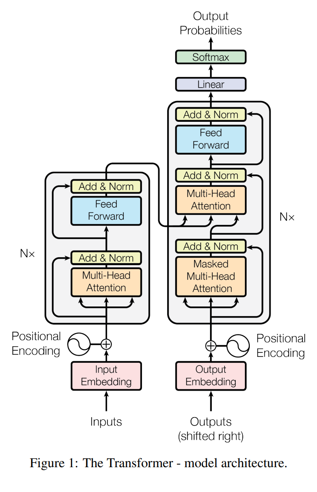
本篇文章重点应用在机器翻译的领域，因此一个形象的例子是(“TRANSFORMER详解” 2021)
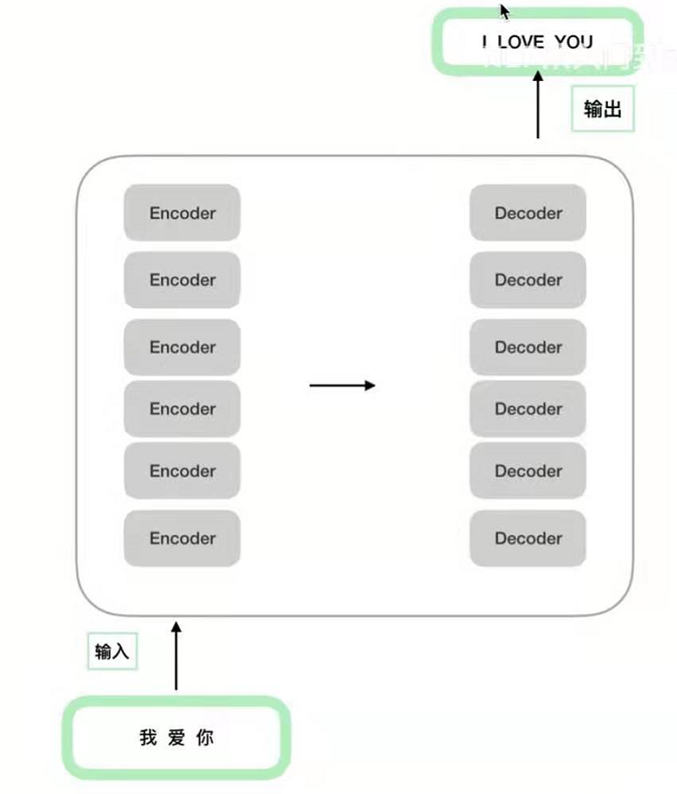
鉴于这个文章写的内容板块比较乱，就不按照文章的顺序了
1.6.2 input
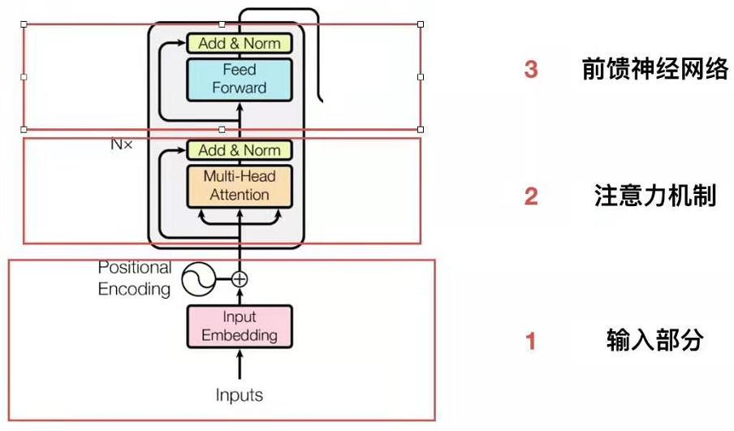
第一部分是输入层，从图来看是两部分组成的，包括一个token embedding和一个positional encoding两部分做求和作为input。
token embedding就是w2VEC训练出来的词向量，每个词向量的维度是512，这个很常规。TRM并没有使用RNN这种序列网络，而是使用的self-attention这种结构。
Since our model contains no recurrence and no convolution, in order for the model to make use of the order of the sequence, we must inject some information about the relative or absolute position of the tokens in the sequence. To this end, we add “positional encodings” to the input embeddings at the bottoms of the encoder and decoder stacks. The positional encodings have the same dimension \(d_{\text {model }}\) as the embeddings, so that the two can be summed. There are many choices of positional encodings, learned and fixed [9]. In this work, we use sine and cosine functions of different frequencies:
RNN处理的是序列的特征，是有先后顺序的，例如“我爱你”这个序列，RNN的处理方式是先处理我，然后再根据“我”的信息处理“爱”等等，RNN中的每个time step是共享U,W,V的。
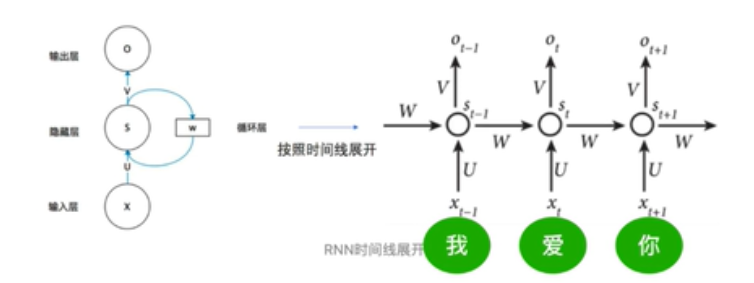
但是transformer不一样，transformer是对每个字/词做并行训练的，可以同时处理，这样的好处是加快了速度，因此transformer就缺少告诉一个序列谁前谁后的一个方法，此时有了位置编码
两种Positional Encoding方法：
\[ \begin{aligned} P E_{(p o s, 2 i)} &=\sin \left(p o s / 10000^{2 i / d_{\text {model }}}\right) \\ P E_{(p o s, 2 i+1)} &=\cos \left(p o s / 10000^{2 i / d_{\text {model }}}\right) \end{aligned} \]
在512维度中，\(2i\)表示偶数位置使用的是\(sin\),\(2i+1\)表示奇数位置使用cos,也就是下图
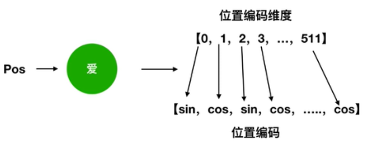
得到位置编码后，将词向量的512维度的tokenembedding和位置向量的512维度的embedding相加，得到最终的512维度作为整个transformer的input。
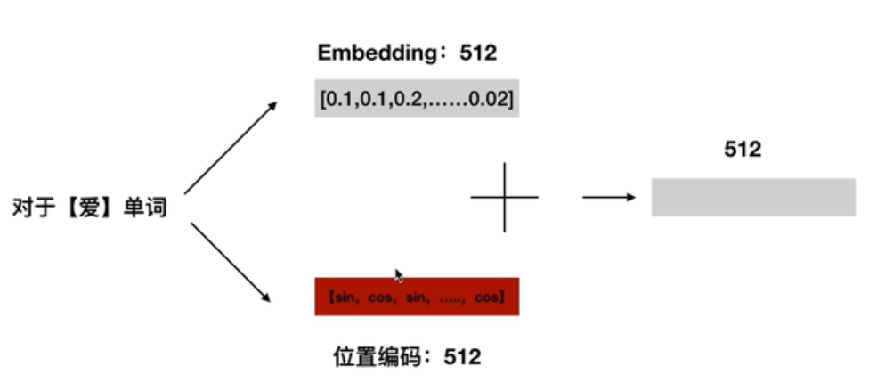
sin,cos体现的绝对的位置编码，这里我其实没太懂这个，绝对位置编码中有相对位置编码的表示。
- 为什么位置编码有用？
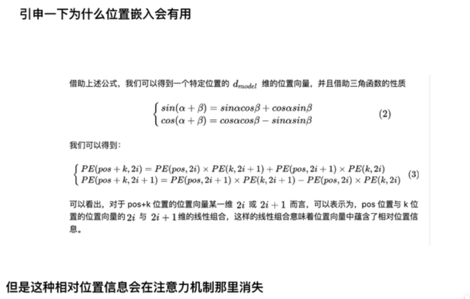
任意位置的 \(PE_{pos+k}\)都可以被\(PE_{pos}\)的线性函数表示。考虑到在NLP任务中，除了单词的绝对位置，单词的相对位置也非常重要。根据公式 \(sin(\alpha+\beta) = sin \alpha cos \beta + cos \alpha sin\beta 以及cos(\alpha + \beta) = cos \alpha cos \beta - sin \alpha sin\beta，\)这表明位置 \(k+p\)的位置向量可以表示为位置 k 的特征向量的线性变化，这为模型捕捉单词之间的相对位置关系提供了非常大的便利。
1.6.3 encoder
encoder: The encoder is composed of a stack of \(N=6\) identical layers. Each layer has two sub-layers. The first is a multi-head self-attention mechanism, and the second is a simple, positionwise fully connected feed-forward network. We employ a residual connection [11] around each of the two sub-layers, followed by layer normalization [1]. That is, the output of each sub-layer is LayerNorm \((x+\) Sublayer \((x)),\) where Sublayer \((x)\) is the function implemented by the sub-layer itself. To facilitate these residual connections, all sub-layers in the model, as well as the embedding layers, produce outputs of dimension \(d_{\text {model }}=512\).
encoder部分是由6个相同的堆网络层组成的，每一层有2个子网络：第一个子网络是多头注意力和自注意力机制，第二个子网络是一个位置全连接前馈神经网络
6个encoder是一模一样的结构，但是参数并不共享，训练的时候6个encoder是同时巡训练的，参数是独立的，不共享
后面albert做改进的时候参数是共享的，因此来减少参数的量级。6个decoder的结构是完全相同的，但是encoder和decoder是完全不同的
1.6.4 self-attention
Instead of performing a single attention function with \(d_{\text {model }}\) -dimensional keys, values and queries, we found it beneficial to linearly project the queries, keys and values \(h\) times with different, learned linear projections to \(d_{k}, d_{k}\) and \(d_{v}\) dimensions, respectively. On each of these projected versions of queries, keys and values we then perform the attention function in parallel, yielding \(d_{v}\) -dimensional output values. These are concatenated and once again projected, resulting in the final values, as depicted in Figure 2.
An attention function can be described as mapping a query and a set of key-value pairs to an output,where the query, keys, values, and output are all vectors. The output is computed as a weighted sum of the values, where the weight assigned to each value is computed by a compatibility function of the query with the corresponding key
attention可以描述为将查询和一组键值对映射到输出，其中查询，键，值和输出都是向量。 将输出计算为值的加权总和，其中分配给每个值的权重是通过查询与相应键的兼容性函数来计算
In practice, we compute the attention function on a set of queries simultaneously, packed together into a matrix \(Q .\) The keys and values are also packed together into matrices \(K\) and \(V\). We compute the matrix of outputs as:
普通的注意力的得分怎么算？可以借鉴一个图
\[ \operatorname{Attention}(Q, K, V)=\operatorname{softmax}\left(\frac{Q K^{T}}{\sqrt{d_{k}}}\right) V \]
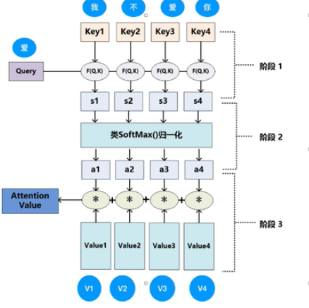
The two most commonly used attention functions are additive attention [2], and dot-product (multiplicative) attention. Dot-product attention is identical to our algorithm, except for the scaling factor of \(\frac{1}{\sqrt{d_{k}}} .\) Additive attention computes the compatibility function using a feed-forward network with a single hidden layer. While the two are similar in theoretical complexity, dot-product attention is much faster and more space-efficient in practice, since it can be implemented using highly optimized matrix multiplication code.
计算attention的方式有2种，一种是点积的形式，另一种是求和的形式这里可以看下参考文献2，transformer中用的是点积的形式，此外还多了一个标准化的\(\frac{1}{\sqrt{d_{k}}}\) 求和形式的注意力使用具有单个隐藏层的前馈网络来计算兼容性函数.实际中点积形式的会更快更省内存。
While for small values of \(d_{k}\) the two mechanisms perform similarly, additive attention outperforms dot product attention without scaling for larger values of \(d_{k}[3] .\) We suspect that for large values of \(d_{k},\) the dot products grow large in magnitude, pushing the softmax function into regions where it has extremely small gradients \({ }^{4} .\) To counteract this effect, we scale the dot products by \(\frac{1}{\sqrt{d_{k}}}\)
虽然对于$ d_ {k} \(较小的，这两种机制的执行方式相似，但是对于\) d_ {k}$ 较大的，加法注意的性能优于点积注意，而无需缩放。我们怀疑对于\(d_{k}\)的较大，点积的幅度增大，将softmax函数推入梯度极小的区域。为了抵消这种影响，用\(\frac{1}{\sqrt{d_{k}}}\)
1.6.5 Multi-head attention
查询,键值分别对应Q,K,V三个矩阵，因此attention的矩阵运算如下
Multi-head attention allows the model to jointly attend to information from different representation subspaces at different positions. With a single attention head, averaging inhibits this.
\[ \begin{aligned} \text { MultiHead }(Q, K, V) &=\text { Concat }\left(\text { head }_{1}, \ldots, \text { head }_{\mathrm{h}}\right) W^{O} \\ \text { where head }_{\mathrm{i}} &=\operatorname{Attention}\left(Q W_{i}^{Q}, K W_{i}^{K}, V W_{i}^{V}\right) \end{aligned} \]
这个公式中并没有解释Q,K,V是怎样得到的，jay alammar的这篇解析中解释的很详细其实就是给三个矩阵\(W^{Q}\),$ W^{K}$, \(W^{V}\)，然后用每个字向量去乘矩阵得到的。 截个图来
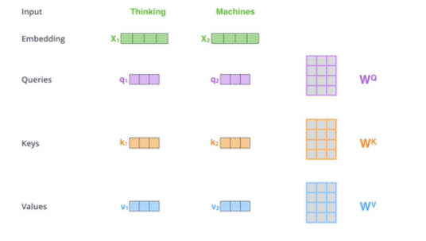
Where the projections are parameter matrices \(W_{i}^{Q} \in \mathbb{R}^{d_{\text {model }} \times d_{k}}, W_{i}^{K} \in \mathbb{R}^{d_{\text {model }} \times d_{k}}, W_{i}^{V} \in \mathbb{R}^{d_{\text {model }} \times d_{v}}\) and \(W^{O} \in \mathbb{R}^{h d_{v} \times d_{\text {model }}}\) In this work we employ \(h=8\) parallel attention layers, or heads. For each of these we use \(d_{k}=d_{v}=d_{\text {model }} / h=64 .\) Due to the reduced dimension of each head, the total computational cost is similar to that of single-head attention with full dimensionality.
Q,K,V每个矩阵的维度是一样的是512*64,面试中问到了。注意力头数是8.
1.6.6 残差网络的结构
为了使网络层变变深，并且缓解梯度消失。
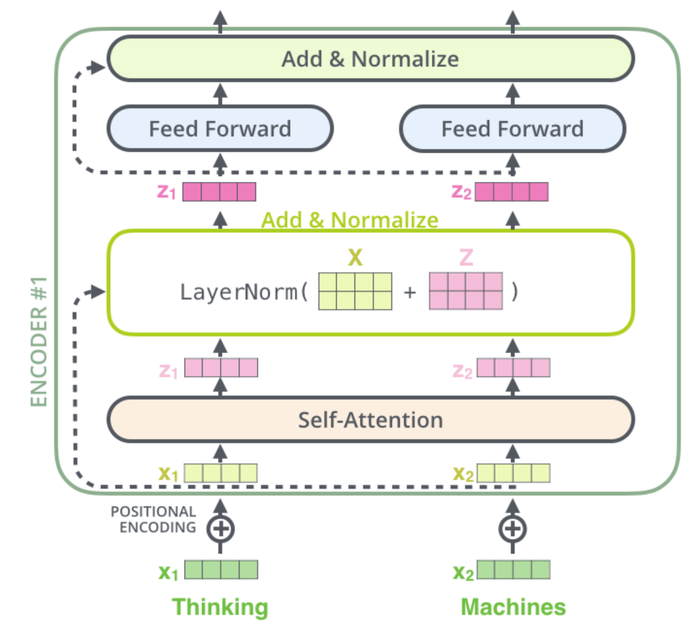
这里推到下resnet为什么能缓解梯度消失?
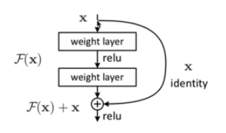
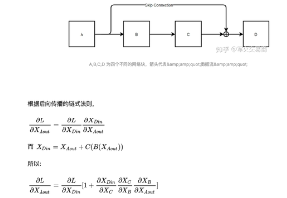 ### LN
因为BN效果差，有一个说法，BN在NLP任务中用到的少，一般都是LN,具体原因可以查一下feature scaling
1.6.7 decoder
Decoder: The decoder is also composed of a stack of \(N=6\) identical layers. In addition to the two sub-layers in each encoder layer, the decoder inserts a third sub-layer, which performs multi-head attention over the output of the encoder stack. Similar to the encoder, we employ residual connections around each of the sub-layers, followed by layer normalization.
decoder部分也是由6个相同的块结构组成，除了每个编码器层中的两个子层之外，解码器还插入一个第三子层，该子层对编码器堆栈的输出执行多头关注，在每个sub-layers之间同样使用了残差神经网络。DECODER部分是产生Q的
We also modify the self-attention sub-layer in the decoder stack to prevent positions from attending to subsequent positions. This masking, combined with fact that the output embeddings are offset by one position, ensures that the predictions for position \(i\) can depend only on the known outputs at positions less than \(i\).
修改了解码器堆栈中的自我注意子层，以防止位置关注后续位置。 这种掩盖，加上输出嵌入被一个位置偏移的事实，确保了对位置$ i\(的预测只能依赖于位置小于\) i$的已知输出。(这里感觉用到了HMM的齐次一阶马尔可夫？）
Transformer注意力机制有效的解释：Transformer所使用的注意力机制的核心思想是去计算一句话中的每个词对于这句话中所有词的相互关系，然后认为这些词与词之间的相互关系在一定程度上反应了这句话中不同词之间的关联性以及重要程度。因此再利用这些相互关系来调整每个词的重要性（权重）就可以获得每个词新的表达。这个新的表征不但蕴含了该词本身，还蕴含了其他词与这个词的关系，因此和单纯的词向量相比是一个更加全局的表达。使用了Attention机制，将序列中的任意两个位置之间的距离缩小为一个常量。 Attention之后还有一个线性的dense层，即multi-head attention_output经过一个hidden_size为768的dense层，然后对hidden层进行dropout，最后加上resnet并进行normalization（tensor的最后一维，即feature维进行）。
OOV就是out-of-vocabulary，不在词库里的意思。
- 新词产生，这个问题的解决方式？
RNN的梯度消失和普通梯度消失有什么不一样？
RNN的梯度是 一个总的梯度和，它的梯度消失并不是变为零，总梯度被近距离的梯度主导，远距离梯度忽略不计
to do:
transfomer 中的sin,cos的相对位置编码每个位置编码的分量存在周期变化，对位置编码向量产生的影响不大。
QKV,有没有都存在的必要？
一部分人说是有，一部分人说是无。
TRM中的PE实现？
# coding=utf-8
import numpy as np
import matplotlib.pyplot as plt
# Code from https://www.tensorflow.org/tutorials/text/transformer
def get_angles(pos, i, d_model):
angle_rates = 1 / np.power(10000, (2 * (i//2)) / np.float32(d_model))
return pos * angle_rates
def positional_encoding(position, d_model):
angle_rads = get_angles(np.arange(position)[:, np.newaxis],
np.arange(d_model)[np.newaxis, :],
d_model)
# apply sin to even indices in the array; 2i
angle_rads[:, 0::2] = np.sin(angle_rads[:, 0::2])
# apply cos to odd indices in the array; 2i+1
angle_rads[:, 1::2] = np.cos(angle_rads[:, 1::2])
pos_encoding = angle_rads[np.newaxis, ...]
return pos_encoding
if __name__ == '__main__':
tokens = 10000 #sequence length
dimensions = 512
pos_encoding = positional_encoding(tokens, dimensions)
print (pos_encoding.shape)
plt.figure(figsize=(12,8))
plt.pcolormesh(pos_encoding[0], cmap='viridis')
plt.xlabel('Embedding Dimensions')
plt.xlim((0, dimensions))
plt.ylim((tokens,0))
plt.ylabel('Token Position')
plt.colorbar()
plt.show()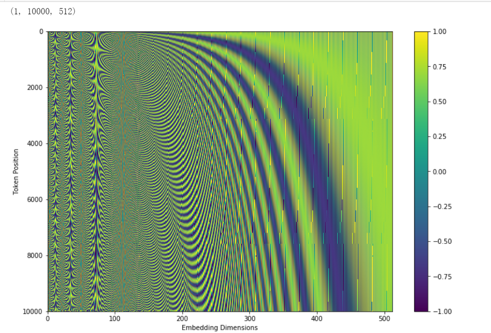
1.6.8 decoder
TRM中的decoder部分一直没好好看，我一直以为里面的mask和bert中的一样，其实TRM中是存在两种bert的，一个的作用是padding 0的部分进行mask，还有事多头注意力机制中的mask
逐个解释
tranformer这里最近看了一篇还不错的分享，等空了把重点内容，之前理解没到位的记录下 这里先放一个链接
上面这个文章中回答了一些在看attention is all you need 论文中的没有讲清楚的几个问题
- transformer中Q,K,V的作用是什么？
Transformer 中采用的是多头自注意力机制。在 Encoder 中，Q、K、V均为输入的序列编码，而多头的线性层可以方便地扩展模型参数。
此处应该有个图
x对应信息V的注意力权重 与 Q*K.tranpose 成正比 等于说：x的注意力权重，由x自己来决定，所以叫自注意力。 Wq,Wk,Wv会根据任务目标更新变化，保证了自注意力机制的效果。 赵明明
换一个通俗易懂的解释
你有一个问题Q，然后去搜索引擎里面搜，搜索引擎里面有好多文章，每个文章V有一个能代表其正文内容的标题K，然后搜索引擎用你的问题Q和那些文章V的标题K进行一个匹配，看看相关度（QK —>attention值），然后你想用这些检索到的不同相关度的文章V来表示你的问题，就用这些相关度将检索的文章V做一个加权和，那么你就得到了一个新的Q’，这个Q’融合了相关性强的文章V更多信息，而融合了相关性弱的文章V较少的信息。这就是注意力机制，注意力度不同，重点关注（权值大）与你想要的东西相关性强的部分，稍微关注（权值小）相关性弱的部分。Leetuter
- 多头注意力机制为什么能解决长依赖的问题？
同一序列中词的关系直接由 score 值计算得到，不会因为时序、传播的限制而造成信息损失，有利于模拟长程依赖，但也有工作通过实验表明[7]，多头注意力机制解决长程依赖是由于参数量的增加，若在同规模下对比，相对CNN，RNN并未有明显提升。
- 下游任务是什么?
预训练技术是指预先设计多层网络结构，将编码后的数据输入到网络结构中进行训练，增加模型的泛化能力。预先设计的网络结构通常被称为预训练模型，它的作用是初始化下游任务。将预训练好的模型参数应用到后续的其他特定任务上，这些特定任务通常被称为“下游任务”
现在非常多的任务都是预训练+微调这种方式进行的，相当于冻结预训练部分的参数，将预训练模型应用到小的数据集上，只需要微调下游任务的参数即可。word2vec，glooe，elmo，bert等都是这种形式。
同样的这些也都是无监督的模型。fastext作为预训练模型的时候也是无监督的，用作分类时时有监督的
- 补充bibtex 养成好的习惯蛤！！
1.7 GPT
单项语言模型,准确的来说是单项的transformer，只用到了transformer中的decodder
1.7.1 introduction
We employ a two-stage training procedure. First, we use a language modeling objective onthe unlabeled data to learn the initial parameters of a neural network model. Subsequently, we adapt these parameters to a target task using the corresponding supervised objective.(Radford et al. 2018)
GPT是一个包含两阶段的训练的过程
在无标签的海量数据中训练语言模型，学习神经网络模型的参数。
阶段一训练完成模型参数用相关标签数据训练target task。
1.7.2 Framework
这里主要是看下GPT的结构
1.7.3 Unsupervised pre-training
无监督的预训练的过程
首先是无监督的预训练部分
Given an unsupervised corpus of tokens \(\mathcal{U}=\left\{u_{1}, \ldots, u_{n}\right\},\) we use a standard language modeling objective to maximize the following likelihood:
语言模型的最大似然函数
\[ L_{1}(\mathcal{U})=\sum_{i} \log P\left(u_{i} \mid u_{i-k}, \ldots, u_{i-1} ; \Theta\right) \]
where \(k\) is the size of the context window, and the conditional probability \(P\) is modeled using a neural network with parameters \(\Theta\). These parameters are trained using stochastic gradient descent [51] .
In our experiments, we use a multi-layer Transformer decoder [34] for the language model, which is a variant of the transformer \([62] .\) This model applies a multi-headed self-attention operation over the input context tokens followed by position-wise feedforward layers to produce an output distribution over target tokens:
使用transformer中的decoder来建立模型
模型的输入上下文使用的是多头注意力机制，然后对位置前馈全连接层进行应用，以在目标token上产生输出分布：
\[ \begin{aligned} h_{0} &=U W_{e}+W_{p} \\ h_{l} &=\text { transformer_block }\left(h_{l-1}\right) \forall i \in[1, n] \\ P(u) &=\operatorname{softmax}\left(h_{n} W_{e}^{T}\right) \end{aligned} \]
where \(U=\left(u_{-k}, \ldots, u_{-1}\right)\) is the context vector of tokens, \(n\) is the number of layers, \(W_{e}\) is the token embedding matrix, and \(W_{p}\) is the position embedding matrix.
\(U=\left(u_{-k}, \ldots, u_{-1}\right)\)是上下文向量的token，\(n\)是层数，\(W_{e}\)是词向量的嵌入矩阵，\(W_{p}\)是位置embedding的矩阵，其他部分都是transformer中的decoder的结构。
1.7.4 Supervised fine-tuning
有监督的微调的阶段
After training the model with the objective in Eq. 1 , we adapt the parameters to the supervised target task. We assume a labeled dataset \(\mathcal{C},\) where each instance consists of a sequence of input tokens, \(x^{1}, \ldots, x^{m},\) along with a label \(y .\) The inputs are passed through our pre-trained model to obtain the final transformer block’s activation \(h_{l}^{m},\) which is then fed into an added linear output layer with parameters \(W_{y}\) to predict \(y:\)
在公式1的目标函数训练的模型,将训练获得的参数应用于有监督的目标任务。假定有带标签的数据集C，包含的每个实例是词序列, 如 \(x^{1}, \ldots, x^{m},\) 带有标签y, 首先作为输入通过已经预训练好的pre-trained model获得最终transformer block’s activation \(h_{l}^{m}\),然后输入带有 Wy的线性输出层来预测y。
简单的来说就是将第一阶段无监督预训练的词向量的作为embedding层。
在最后一个transformer block后跟一层全连接和softmax构成task classifier，预测每个类别的概率。
\[ P\left(y \mid x^{1}, \ldots, x^{m}\right)=\operatorname{softmax}\left(h_{l}^{m} W_{y}\right) \]
This gives us the following objective to maximize:
在输入所有的token后，预测true类别的概率最大，目标函数为：
\[ L_{2}(\mathcal{C})=\sum_{(x, y)} \log P\left(y \mid x^{1}, \ldots, x^{m}\right) \]
We additionally found that including language modeling as an auxiliary objective to the fine-tuning helped learning by (a) improving generalization of the supervised model, and (b) accelerating convergence. This is in line with prior work [50,43] , who also observed improved performance with such an auxiliary objective. Specifically, we optimize the following objective (with weight \(\lambda\) ):
为了更好的fine-tuning分类器，更快的收敛，修改目标函数为task classifier和text prediction相结合：
\[ L_{3}(\mathcal{C})=L_{2}(\mathcal{C})+\lambda * L_{1}(\mathcal{C}) \] Overall, the only extra parameters we require during fine-tuning are \(W_{y}\), and embeddings for delimiter tokens (described below in Section 3.3

For some tasks, like text classification, we can directly fine-tune our model as described above. Certain other tasks, like question answering or textual entailment, have structured inputs such as ordered sentence pairs, or triplets of document, question, and answers. Since our pre-trained model was trained on contiguous sequences of text, we require some modifications to apply it to these tasks. Previous work proposed learning task specific architectures on top of transferred representations [44] . Such an approach re-introduces a significant amount of task-specific customization and does not use transfer learning for these additional architectural components. Instead, we use a traversal-style approach \([52],\) where we convert structured inputs into an ordered sequence that our pre-trained model can process. These input transformations allow us to avoid making extensive changes to the architecture across tasks. We provide a brief description of these input transformations below and Figure \(\square\) provides a visual illustration. All transformations include adding randomly initialized start and end tokens \((\langle s\rangle,\langle e\rangle)\).
figure1是是GPT针对不同的任务选择的不同的transformer结构。
文本分类是1层transformer+liner层
文本相似度分析是2层transformer+liner层
不同的任务处理方式不同。
通过提升参数量来提升任务的效果，不知道这种代价在实际应用中是否划算。
Textual entailment For entailment tasks, we concatenate the premise \(p\) and hypothesis \(h\) token sequences, with a delimiter token ($) in between.
entailment：因输入有前提和假说两个句子，那就在两个句子中加入分隔符（delim）连接两条句子，作为输入，经过语言模型送入分类器。
Similarity For similarity tasks, there is no inherent ordering of the two sentences being compared. To reflect this, we modify the input sequence to contain both possible sentence orderings (with a delimiter in between) and process each independently to produce two sequence representations \(h_{l}^{m}\) which are added element-wise before being fed into the linear output layer.
similarity：因两条句子的顺序不影响结果，就按两种顺序分别放入语言模型得到各自的hidden state，将两种hidden state相加，送入分类器。
Question Answering and Commonsense Reasoning For these tasks, we are given a context document \(z,\) a question \(q,\) and a set of possible answers \(\left\{a_{k}\right\} .\) We concatenate the document context and question with each possible answer, adding a delimiter token in between to get \(\left[z ; q ; \$ ; a_{k}\right]\). Each of these sequences are processed independently with our model and then normalized via a softmax layer to produce an output distribution over possible answers.
multiple choice：对于每个答案，都将context、问题、该答案以分隔符隔开连接起来，作为输入，经过语言模型送入分类器得到一个向量，将所有答案的向量送入softmax。
1.7.5 实验部分
Unsupervised pre-training We use the BooksCorpus dataset [71] for training the language model. It contains over 7,000 unique unpublished books from a variety of genres including Adventure, Fantasy, and Romance. Crucially, it contains long stretches of contiguous text, which allows the generative model to learn to condition on long-range information. An alternative dataset, the \(1 \mathrm{~B}\) Word Benchmark, which is used by a similar approach, ELMo [44] , is approximately the same size
预料库是BooksCorpus数据集，elmo好像也是这个
but is shuffled at a sentence level - destroying long-range structure. Our language model achieves a very low token level perplexity of 18.4 on this corpus.
- token级别的困惑度是什么?
Model specifications \(\quad\) Our model largely follows the original transformer work \([62] .\) We trained a 12-layer decoder-only transformer with masked self-attention heads ( 768 dimensional states and 12 attention heads). For the position-wise feed-forward networks, we used 3072 dimensional inner states. We used the Adam optimization scheme [27] with a max learning rate of \(2.5 \mathrm{e}-4 .\) The learning rate was increased linearly from zero over the first 2000 updates and annealed to 0 using a cosine schedule. We train for 100 epochs on minibatches of 64 randomly sampled, contiguous sequences of 512 tokens. Since layernorm [2] is used extensively throughout the model, a simple weight initialization of \(N(0,0.02)\) was sufficient. We used a bytepair encoding (BPE) vocabulary with 40,000 merges [53] and residual, embedding, and attention dropouts with a rate of 0.1 for regularization. We also employed a modified version of \(L 2\) regularization proposed in [37] , with \(w=0.01\) on all non bias or gain weights. For the activation function, we used the Gaussian Error Linear Unit (GELU) \([18] .\) We used learned position embeddings instead of the sinusoidal version proposed in the original work. We use the \(f t f y\) library \([\) to clean the raw text in BooksCorpus, standardize some punctuation and whitespace, and use the spa \(C y\) tokenizer
语言模型采用12层的transformer decoder(768 dimensional states and 12 attention heads).
position-wise前馈网络部分设置为3072维.
优化方法采用Adam, 同时设置最大学习率为$ 2.5e^{-4}$
epoch: 100
batch size: 64
每个输入包含512个token
L2正则: 0.01
激活函数: GELU(LU系列)
用fifty和spaCy库对语料进行预处理
Fine-tuning details Unless specified, we reuse the hyperparameter settings from unsupervised pre-training. We add dropout to the classifier with a rate of \(0.1 .\) For most tasks, we use a learning rate of \(6.25 \mathrm{e}-5\) and a batchsize of \(32 .\) Our model finetunes quickly and 3 epochs of training was sufficient for most cases. We use a linear learning rate decay schedule with warmup over \(0.2 \%\) of training. \(\lambda\) was set to 0.5 .
Fine-tuning部分
fine-tuning阶段加上0.1的dropout
learning rate: \(6.25e−5\)
batch size: 32
epoch: 只需要3个epoch
0.2% warmup
warmup ?
在四个任务上慢分别做测试，在部分或者所选全部数据集上均能达到sota,自然语言推理，问答系统，文本相似度分析，文本分类任务等。
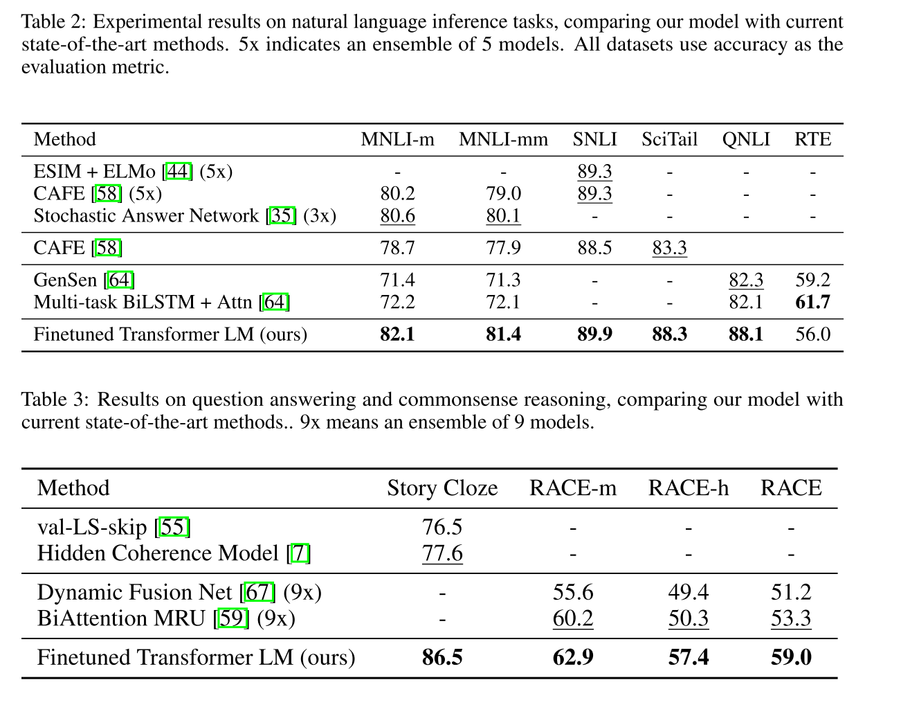 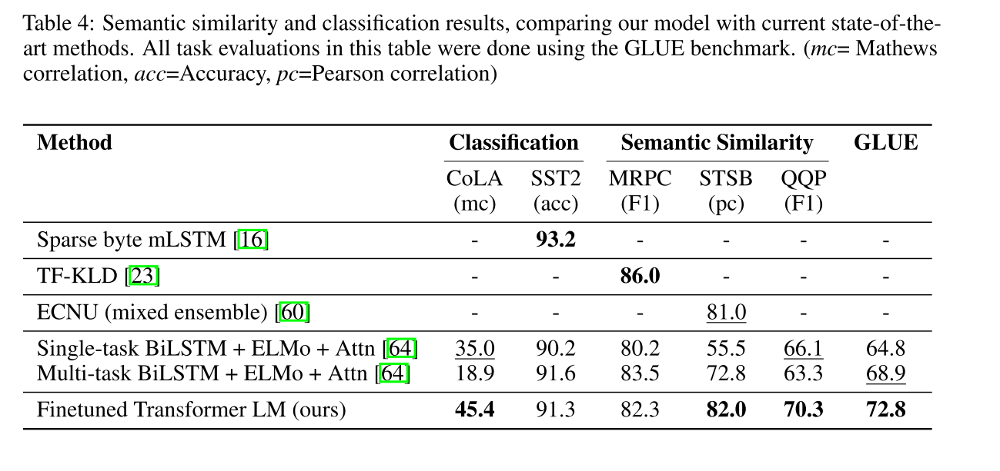
1.7.6 实验分析
Impact of number of layers transferred We observed the impact of transferring a variable number of layers from unsupervised pre-training to the supervised target task. Figure 2 (left) illustrates the performance of our approach on MultiNLI and RACE as a function of the number of layers transferred. We observe the standard result that transferring embeddings improves performance and that each transformer layer provides further benefits up to \(9 \%\) for full transfer on MultiNLI. This indicates that each layer in the pre-trained model contains useful functionality for solving target tasks.
研究迁移学习的层数模型效果的关系
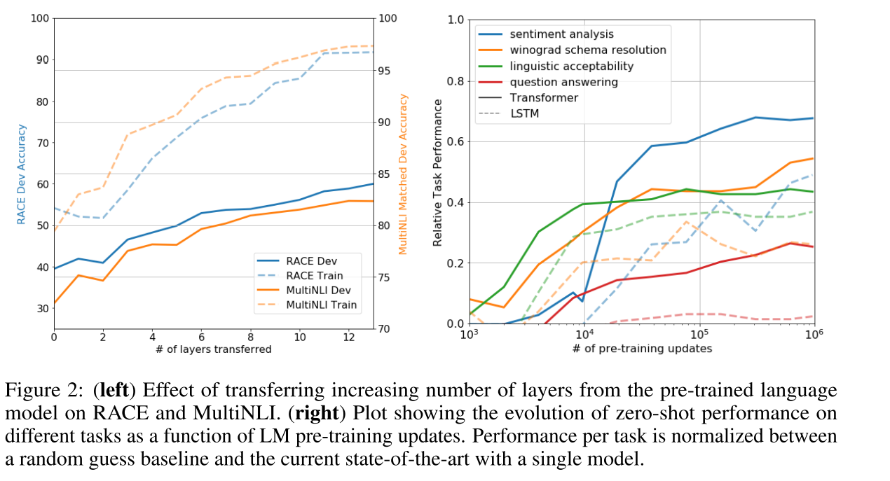
左图：利用Transformer的decoder作为语言模型，transformer的层数越多表现越好。
右图：预训练的迭代次数越多，模型学到的内容越多，学的到表示越好。从而表现 到微调后的目标任务上的表现就更好.
zero-shot? 零次学习
正好有几个概念一起学习一下：
元学习
启发式学习
迁移学习
强化学习
联邦学习
1.8 ULMFit
这个模型里面的基础框架也是LSTM结构，这个文章简单的看下思路，感觉有很多调参的经验可以平时用一些
We propose a new method, Universal Language Model Fine-tuning (ULMFiT) that addresses these issues and enables robust inductive transfer learning for any NLP task, akin to fine-tuning ImageNet models: The same 3-layer LSTM architecturewith the same hyperparameters and no additions other than tuned dropout hyperparameters outperforms highly engineered models and transfer learning approaches on six widely studied text classification tasks. On IMDb, with 100 labeled examples, ULMFiT matches the performance of training from scratch with \(10 \times\) and- given \(50 \mathrm{k}\) unlabeled examples-with \(100 \times\) more data.
Contributions \(\quad\) Our contributions are the following: 1) We propose Universal Language Model Fine-tuning (ULMFiT), a method that can be used to achieve CV-like transfer learning for any task for NLP. 2) We propose discriminative fine-tuning, slanted triangular learning rates, and gradual unfreezing, novel techniques to retain previous knowledge and avoid catastrophic forgetting during fine-tuning. 3 ) We significantly outperform the state-of-the-art on six representative text classification datasets, with an error reduction of \(18-24 \%\) on the majority of datasets. 4) We show that our method enables extremely sample-efficient transfer learning and perform an extensive ablation analysis. 5) We make the pretrained models and our code available to enable wider adoption.
1.9 BERT
1.9.1 introduction
In this paper, we improve the fine-tuning based approaches by proposing BERT: Bidirectional \(\begin{array}{ll}\text { Encoder } & \text { Representations } & \text { from } & \text { Transformers. }\end{array}\) BERT alleviates the previously mentioned unidirectionality constraint by using a “masked language model” (MLM) pre-training objective, inspired by the Cloze task (Taylor, 1953). The masked language model randomly masks some of the tokens from the input, and the objective is to predict the original vocabulary id of the masked word based only on its context. Unlike left-toright language model pre-training, the MLM objective enables the representation to fuse the left and the right context, which allows us to pretrain a deep bidirectional Transformer. In addition to the masked language model, we also use a “next sentence prediction” task that jointly pretrains text-pair representations. The contributions of our paper are as follows:
We demonstrate the importance of bidirectional pre-training for language representations. Unlike Radford et al. (2018), which uses unidirectional language models for pre-training, BERT uses masked language models to enable pretrained deep bidirectional representations. This is also in contrast to Peters et al. \((2018 \mathrm{a}),\) which uses a shallow concatenation of independently trained left-to-right and right-to-left LMs.
We show that pre-trained representations reduce the need for many heavily-engineered taskspecific architectures. BERT is the first finetuning based representation model that achieves state-of-the-art performance on a large suite of sentence-level and token-level tasks, outperforming many task-specific architectures.
BERT advances the state of the art for eleven NLP tasks. The code and pre-trained models are available at https: / / github. com/ google-research/bert.
在本文中，通过提出BERT：变换器的双向编码器表示来改进基于微调的方法。 BERT通过提出一个新的预训练目标来解决前面提到的单向约束：“掩盖语言模型”（MLM），受到完形任务的启发（Taylor，1953）。MLM从输入中随机地掩盖一些标记，并且目标是仅基于其上下文来预测被掩盖的单词的原始词汇id。与从左到右的语言模型预训练不同，MLM目标允许表示融合左右上下文，预训练一个深度双向变换器。除了MLM，我们还引入了一个“下一句预测”任务，联合预训练文本对表示。
bert是两部分组成的
- MLM :掩盖语言模型
- next sentence prediction：下一句预测
本文的贡献如下：
证明了双向预训练对语言表达的重要性。与Radford等人不同。 （2018），其使用单向语言模型进行预训练，BERT使用mask语言模型来实现预训练任务的的深度双向表示。这也与Peters等人(2018年)形成了鲜明对比，Peters等人使用的是一种由独立训练的从左到右和从右到左的LMs的浅层连接。
展示了预先训练的表示消除了许多经过大量工程设计的特定于任务的体系结构的需求。BERT是第一个基于微调的表示模型，它在大量的句子级和token任务上实现了最先进的性能，优于许多具有任务特定体系结构的系统。预训练+微调
BERT推进了11项NLP任务的最新技术。
1.9.2 bert结构
We introduce BERT and its detailed implementation in this section. There are two steps in our framcwork: pre-training and fine-tuning. During pre-training, the model is trained on unlabeled data over different pre-training tasks. For finetuning, the BERT model is first initialized with the pre-trained parameters, and all of the parameters are fine-tuned using labeled data from the downstream tasks. Each downstream task has separate fine-tuned models, even though they are initialized with the same pre-trained parameters. The question-answering example in Figure 1 will serve as a running example for this section.
bert也是两阶段的任务预训练的任务+微调的任务
A distinctive feature of BERT is its unified architecture across different tasks. There is minimal difference between the pre-trained architecture and the final downstream architecture.
针对不同的下游任务会有不同的预训练的模型
Model Architecture BERT’s model architecture is a multi-layer bidirectional Transformer encoder based on the original implementation described in Vaswani et al. (2017) and released in the tensor2tensor library. \({ }^{1}\) Because the use of Transformers has become common and our implementation is almost identical to the original, we will omit an exhaustive background description of the model architecture and refer readers to Vaswani et al. (2017) as well as excellent guides such as “The Annotated Transformer.”
BERT是多层双向Transformer编码器，基于Vaswani等人（2017）中描述的原始实现，并在tensor2tensor库中发布。
In this work, we denote the number of layers (i.c., Transformcr blocks) as \(L,\) the hiddcn sizc as \(H,\) and the number of self-attention heads as \(A .^{3}\) We primarily report results on two model sizes: \(\mathbf{B E R T}_{\mathbf{B A S E}}(\mathrm{L}=12, \mathrm{H}=768, \mathrm{~A}=12,\) Total Param- eters \(=110 \mathrm{M}\) ) and \(\mathbf{B E R T}_{\text {LARGE }}(\mathrm{L}=24, \mathrm{H}=1024\) \(\mathrm{A}=16,\) Total Parameters \(=340 \mathrm{M}\) ). BERT \(_{\text {BASE }}\) was chosen to have the same model size as OpenAI GPT for comparison purposes. Critically, however, the BERT Transformer uses bidirectional self-attention, while the GPT Transformer uses constrained self-attention where every token can only attend to context to its left.
- L是transformer中的block块的层数
- H是隐藏层数量
- A是注意力的头数
base bert和large bert参数规模的设置如下：
\(\mathbf{B E R T}_{\mathbf{B A S E}}(\mathrm{L}=12, \mathrm{H}=768, \mathrm{~A}=12,\) Total Param- eters \(=110 \mathrm{M}\) ) and \(\mathbf{B E R T}_{\text {LARGE }}(\mathrm{L}=24, \mathrm{H}=1024\) \(\mathrm{A}=16,\) Total Parameters \(=340 \mathrm{M}\) ).
base bert的参数量级和openai的gpt的参数量是一样的。
对比两个模型，bert是使用了双向的self-attention，GPT是是单项的self-attention,只能学到从左侧的上下文语义。
1.9.3 input output
Input/Output Representations To make BERT handle a variety of down-stream tasks, our input representation is able to unambiguously represent both a single sentence and a pair of sentences (e.g., \(\langle\) Question, Answer \(\rangle\) ) in one token sequence. Throughout this work, a “sentence” can be an arbitrary span of contiguous text, rather than an actual linguistic sentence. A “sequence” refers to the input token sequence to BERT, which may be a single sentence or two sentences packed together. We use WordPiece embeddings (Wu et al., 2016) with a 30,000 token vocabulary. The first token of every sequence is always a special classification token ( \([\mathrm{CLS}]\) ). The final hidden state corresponding to this token is used as the aggregate sequence representation for classification tasks. Sentence pairs are packed together into a single sequence. We differentiate the sentences in two ways. First, we separate them with a special token ( \([\mathrm{SEP}])\). Second, we add a learned embedding to every token indicating whether it belongs to sentence \(A\) or sentence \(B\). As shown in Figure 1 . we denote input embedding as \(E,\) the final hidden vector of the special [CLS] token as \(C \in \mathbb{R}^{H}\), and the final hidden vector for the \(i^{\text {th }}\) input token as \(T_{i} \in \mathbb{R}^{H}\) For a given token, its input representation is constructed by summing the corresponding token, segment, and position embeddings. A visualization of this construction can be seen in Figure 2
输入表示能够在一个token序列中明确地表示单个文本句子或一对文本句子（例如，[问题，答案]）。对于给定的标记，其输入表示通过token embedding ,segment embedding ,position embedding三个部分求和来表示。输入表示的可视化表示在图2中给出。具体是：
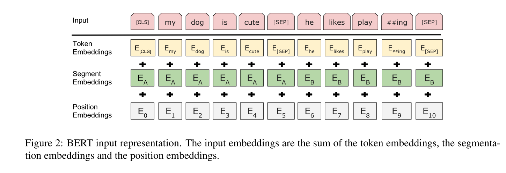
输入/输出表示 为了使bert处理一系列的下游任务，输入表示能够在一个token序列中明确的表示单个句子和一对句子。在整个工作中，一个“句子”可是是任意一段连续的文本，而不是实际语言的句子。一个“句子”指的是输入BERT的token序列，这个序列可以是单个序列或者是两个序列连在一起。
使用带有30,000个token的词汇表做WordPiece嵌入，每个序列的第一个token都是一个特殊的分类符号（[CLS]）。与该token相对应的最终隐藏状态用作分类任务的合计序列表示。句子对打包在一起成为单个序列
有两种方式区分句子。
- 第一使用特殊的token（[SEP]）将句子分开，其次，在每个标记中加入一个学习嵌入，表明它是属于句子a还是句子B。如图1所示，用E表示输入嵌入，特殊token[CLS]的最终的影藏向量为C，和 ith 输入token最终隐藏向量为\(T_i\)。
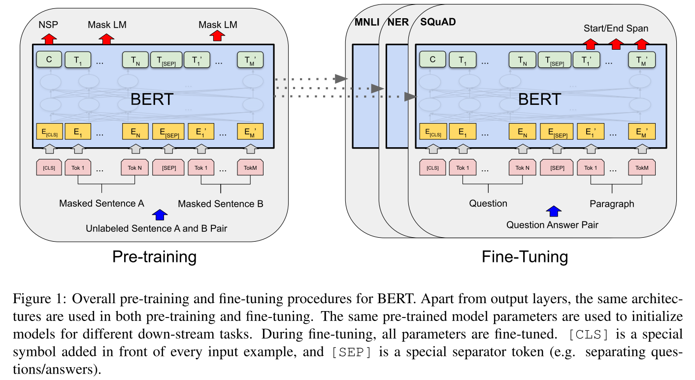
1.9.4 MLM
掩盖语言模型：
Task #1: Masked LM \(\quad\) Intuitively, it is reasonable to believe that a deep bidirectional model is strictly more powerful than either a left-to-righ model or the shallow concatenation of a left-toright and a right-to-left model. Unfortunately standard conditional language models can only be trained left-to-right or right-to-left, since bidirec tional conditioning would allow each word to in directly “see itself”, and the model could trivially predict the target word in a multi-layered context. In order to train a deep bidirectional representation, we simply mask some percentage of the input tokens at random, and then predict those masked tokens. We refer to this procedure as a “masked LM” (MLM), although it is often referred to as a Cloze task in the literature (Taylor, 1953\()\). In this case, the final hidden vectors corresponding to the mask tokens are fed into an output softmax over the vocabulary, as in a standard LM. In all of our experiments, we mask \(15 \%\) of all WordPiece tokens in each sequence at random. In contrast to denoising auto-encoders (Vincent et al., 2008 ), we only predict the masked words rather than reconstructing the entire input. Although this allows us to obtain a bidirectional pre-trained model, a downside is that we are creating a mismatch between pre-training and fine-tuning, since the [MASK] token does not appear during fine-tuning. To mitigate this, we do not always replace “masked” words with the actual [MASK] token. The training data generator chooses \(15 \%\) of the token positions at random for prediction. If the \(i\) -th token is chosen, we replace the \(i\) -th token with (1) the [MASK] token \(80 \%\) of the time (2) a random token \(10 \%\) of the time (3) the unchanged \(i\) -th token \(10 \%\) of the time. Then, \(T_{i}\) will be used to predict the original token with cross entropy loss. We compare variations of this procedure in Appendix \(\mathrm{C.} .2 .\)
任务1：Masked LM直观的说，双向模型的效果比单项的好,因为双向调节会允许每个单词间接地“看到自己”，并且模型可以在多层次的语境中对目标词进行简单的预测。
前者通常被称为“transformer encoder”，然而仅仅用于上下文的版本被称为“transformer decoder”，因此它可以被用于文本生成。
为了训练深度双向的表示，只是随机的屏蔽一定百分比的输入token，然后去预测那些遮盖掉的token。将这个过程称为是“masked LM”（MLM），尽管它在文献中通常被称为完形任务。在这种情况下，对应于mask token的最终的隐藏向量通过词汇表输出softmax，如标准的LM。在所有的实验中，随机屏蔽每个序列中所有的WordPiece token的15%。和去燥的auto-encoder相比，只预测掩蔽的单词而不是重建整个输入。
虽然这允许获得双向预训练模型，但缺点是在预训练和微调之间产生不匹配，因为微调期间 [MASK] 不会出现。为了缓解这个问题，并不总是用实际的 [MASK] token替换“masked”词。训练数据生成器随机选择15％的token位置进行预测。如果选择了第i个token，就将第i个token
（1）80%的情况替换为[MASK]token
（2）10%的情况替换为随机的token
（3）10%的情况保持不变。
然后\(T_i\)将用于预测具有交叉熵损失的原始token。比较了附录C.2中该过程的变化。
附录东西跟多，可以好好看看
BERT实际上是Transformer的Encoder，为了在语言模型的训练中，使用上下文信息又不泄露标签信息，采用了Masked LM，简单来说就是随机的选择序列的部分token用 [Mask] 标记代替。
- mask有一个非常大的缺点是mask的操作只存在于pre-train中，fine-tune中没有，这就使得，mask在下游任务中是失效的。
但是，mask有效不是因为特征穿越的原因嘛？
可以考虑下几个问题：
mask中的特征穿越问题？
mask中过程是无法知道预测的是上文还是下文的token
mask与滑动窗口的关系？
1.9.5 Next Sentence Prediction
Many important downstream tasks such as Question Answering (QA) and Natural Language Inference (NLI) are based on understanding the relationship between two sentences, which is not directly captured by language modeling. In order to train a model that understands sentence relationships, we pre-train for a binarized next sentence prediction task that can be trivially generated from any monolingual corpus. Specifically, when choosing the sentences \(A\) and \(B\) for each pretraining example, \(50 \%\) of the time \(B\) is the actual next sentence that follows A (labeled as IsNext), and \(50 \%\) of the time it is a random sentence from the corpus (labeled as NotNext). As we show in Figure \(1, C\) is used for next sentence prediction (NSP). \(^{5}\) Despite its simplicity, we demonstrate in Section 5.1 that pre-training towards this task is very beneficial to both QA and NLI. The NSP task is closely related to representationlearning objectives used in Jernite et al. (2017) and Logeswaran and Lee (2018). However, in prior work, only sentence embeddings are transferred to down-stream tasks, where BERT transfers all parameters to initialize end-task model parameters. Pre-training data The pre-training procedure largely follows the existing literature on language model pre-training. For the pre-training corpus we use the BooksCorpus (800M words) (Zhu et al., 2015 ) and English Wikipedia \((2,500 \mathrm{M}\) words \()\). For Wikipedia we extract only the text passages and ignore lists, tables, and headers. It is critical to use a document-level corpus rather than a shuffled sentence-level corpus such as the Billion Word Benchmark (Chelba et al., 2013 ) in order to extract long contiguous sequences.
BERT这里是借鉴了Skip-thoughts方法中的句子预测，具体做法则是将两个句子组合成一个序列，当然组合方式会按照下面将要介绍的方式，然后让模型预测这两个句子是否是先后近邻的两个句子，也就是会把“Next Sentence Prediction”问题建模成为一个二分类问题。训练的时候，数据中有50%的情况这两个句子是先后关系，而另外50%的情况下，这两个句子是随机从语料中凑到一起的，也就是不具备先后关系，以此来构造训练数据。句子级别的预测思路和之前介绍的Skip-thoughts基本一致，当然更本质的思想来源还是来自于word2vec中的skip-gram模型。
1.9.6 Fine-tuning BERT
bert的微调过程
Fine-tuning is straightforward since the self-attention mechanism in the Transformer al- lows BERT to model many downstream tasks whether they involve single text or text pairs-by swapping out the appropriate inputs and outputs. For applications involving text pairs, a common pattern is to independently encode text pairs before applying bidirectional cross attention, such as Parikh et al. (2016); Seo et al. (2017). BERT instead uses the self-attention mechanism to unify these two stages, as encoding a concatenated text pair with self-attention effectively includes bidirectional cross attention between two sentences. For each task, we simply plug in the task specific inputs and outputs into BERT and finetune all the parameters end-to-end. At the input, sentence \(A\) and sentence \(B\) from pre-training are analogous to (1) sentence pairs in paraphrasing, (2) hypothesis-premise pairs in entailment, (3) question-passage pairs in question answering, and (4) a degenerate text- \(\varnothing\) pair in text classification or sequence tagging. At the output, the token representations are fed into an output layer for tokenlevel tasks, such as sequence tagging or question answering, and the [CLS] representation is fed into an output layer for classification, such as entailment or sentiment analysis.
Compared to pre-training, fine-tuning is relatively inexpensive. All of the results in the paper can be replicated in at most 1 hour on a single Cloud TPU, or a few hours on a GPU, starting from the exact same pre-trained model. \(^{7}\) We describe the task-specific details in the corresponding subsections of Section \(4 .\) More details can be found in Appendix A.5.
对比预训练的过程，微调的过程就没那么的耗费资源了。这篇文中所有的实验的结果使用单个tpu至少1个h，或者几个小时gpu。附录中有介绍。
1.9.7 实验部分
The General Language Understanding Evaluation (GLUE) benchmark (Wang et al., \(2018 \mathrm{a}\) ) is a collection of diverse natural language understanding tasks. Detailed descriptions of GLUE datasets are included in Appendix B.1.
使用的是自然语言理解类的数据集GLUE
To fine-tune on GLUE, we represent the input sequence (for single sentence or sentence pairs) as described in Section \(3,\) and use the final hidden vector \(C \in \mathbb{R}^{H}\) corresponding to the first input token ( [ CLS ] ) as the aggregate representation. The only new parameters introduced during fine-tuning are classification layer weights \(W \in\) \(\mathbb{R}^{K \times H}\), where \(K\) is the number of labels. We compute a standard classification loss with \(C\) and \(W\), i.e., \(\log \left(\operatorname{softmax}\left(C W^{T}\right)\right)\).
We use a batch size of 32 and fine-tune for 3 epochs over the data for all GLUE tasks. For each task, we selected the best fine-tuning learning rate (among \(5 \mathrm{e}-5,4 \mathrm{e}-5,3 \mathrm{e}-5,\) and \(2 \mathrm{e}-5)\) on the Dev set. Additionally, for BERT \(_{\text {LARGE }}\) we found that finetuning was sometimes unstable on small datasets, so we ran several random restarts and selected the best model on the Dev set. With random restarts, we use the same pre-trained checkpoint but perform different fine-tuning data shuffling and classifier layer initialization. \(^{9}\) Results are presented in Table 1. Both BERT \(_{\text {BASE }}\) and BERT \(_{\text {LARGE }}\) outperform all systems on all tasks by a substantial margin, obtaining \(4.5 \%\) and \(7.0 \%\) respective average accuracy improvement over the prior state of the art. Note that BERT \(_{\text {BASE }}\) and OpenAI GPT are nearly identical in terms of model architecture apart from the attention masking. For the largest and most widely reported GLUE task, MNLI, BERT obtains a \(4.6 \%\) absolute accuracy improvement. On the official GLUE leaderboard \(^{10}\), BERT \(_{\text {LARGE Obtains a score }}\) of \(80.5,\) compared to OpenAI GPT, which obtains 72.8 as of the date of writing. We find that BERT \(_{\text {LARGE }}\) significantly outperforms BERT \(_{\text {BASE }}\) across all tasks, especially those with very little training data. The effect of model size is explored more thoroughly in Section 5.2.
实验参数设置： - batchsize：32
- 学习率：\(5 \mathrm{e}-5,4 \mathrm{e}-5,3 \mathrm{e}-5,\) and \(2 \mathrm{e}-5)\)
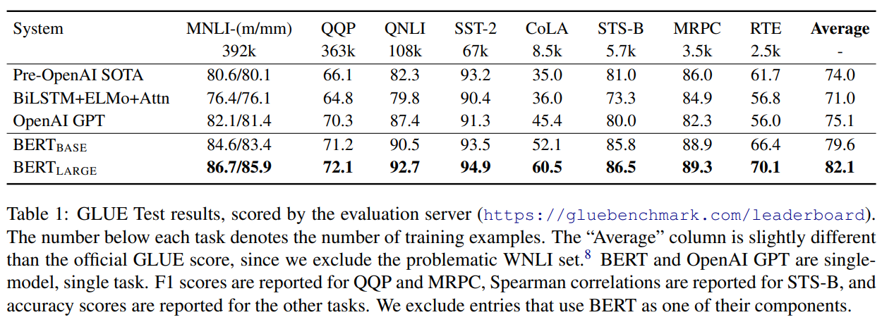
largebert在小的数据集上比basebert的效果来说可能不稳定
从table的实验结果来看large-bert的效果在所有任务上都是最好的。
在问答数据集SQuADv1.1上的效果
The Stanford Question Answering Dataset (SQuAD v1.1) is a collection of \(100 \mathrm{k}\) crowdsourced question/answer pairs (Rajpurkar et al.,2016). Given a question and a passage from Wikipedia containing the answer, the task is to predict the answer text span in the passage. As shown in Figure \(1,\) in the question answering task, we represent the input question and passage as a single packed sequence, with the question using the \(A\) embedding and the passage using the \(B\) embedding. We only introduce a start vector \(S \in \mathbb{R}^{H}\) and an end vector \(E \in \mathbb{R}^{H}\) during fine-tuning. The probability of word \(i\) being the start of the answer span is computed as a dot product between \(T_{i}\) and \(S\) followed by a softmax over all of the words in the paragraph: \(P_{i}=\frac{e^{S \cdot T_{i}}}{\sum_{j} e^{S \cdot T_{j}}}\) The analogous formula is used for the end of the answer span. The score of a candidate span from position \(i\) to position \(j\) is defined as \(S \cdot T_{i}+E \cdot T_{j}\) and the maximum scoring span where \(j \geq i\) is used as a prediction. The training objective is the sum of the log-likelihoods of the correct start and end positions. We fine-tune for 3 epochs with a learning rate of \(5 \mathrm{e}-5\) and a batch size of 32 .
这个实验中的参数设置：3个epoch,学习率：\(5 \mathrm{e}-5\)，batchsize:32
Table 2 shows top leaderboard entries as well as results from top published systems (Seo et al., \(2017 ;\) Clark and Gardner, 2018 ; Peters et al., 2018a; Hu et al., 2018). The top results from the SQuAD leaderboard do not have up-to-date public system descriptions available, \({ }^{11}\) and are allowed to use any public data when training their systems. We therefore use modest data augmentation in our system by first fine-tuning on TriviaQA (Joshi et al., 2017 ) befor fine-tuning on SQuAD.
Our best performing system outperforms the top leaderboard system by \(+1.5 \mathrm{~F} 1\) in ensembling and \(+1.3 \mathrm{~F} 1\) as a single system. In fact, our single BERT model outperforms the top ensemble system in terms of \(\mathrm{F} 1\) score. Without TriviaQA fine-tuning data, we only lose 0.1-0.4 F1, still outperforming all existing systems by a wide margin.
实验太多了，这里写一个吧~1，图2中的实验对比结果，bert-large的效果是最好的。
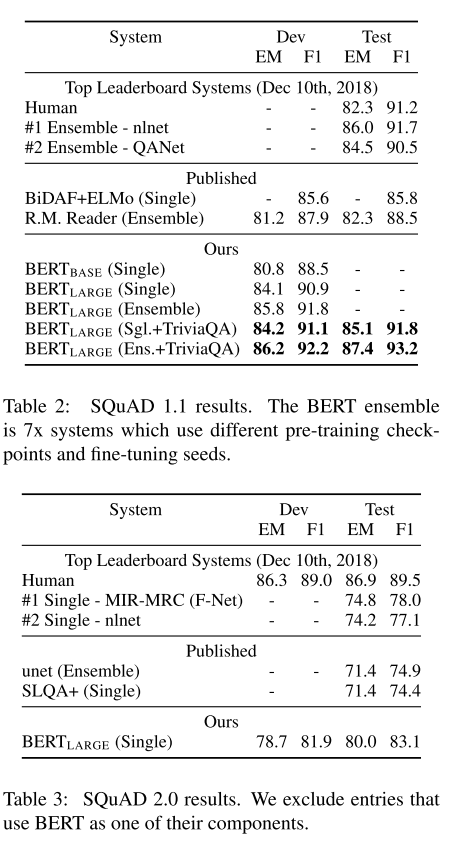
1.9.8 Ablation Studies
消融实验，这个名词第一回听说
1.9.8.1 NSP对预训练模型的效果
We demonstrate the importance of the deep bidirectionality of BERT by evaluating two pretraining objectives using exactly the same pretraining data, fine-tuning scheme, and hyperparameters as BERT \(_{\text {BASE }}\) :
No NSP: A bidirectional model which is trained using the “masked LM” (MLM) but without the “next sentence prediction” (NSP) task. LTR & No NSP: A left-context-only model which is trained using a standard Left-to-Right (LTR) LM, rather than an MLM. The left-only constraint was also applied at fine-tuning, because removing it introduced a pre-train/fine-tune mismatch that degraded downstream performance. Additionally, this model was pre-trained without the NSP task. This is directly comparable to OpenAI GPT, but using our larger training dataset, our input representation, and our fine-tuning scheme.
对于base bert中，设置对照组，双向LM无NSP，是LTR(从左到右)的单项任务无NSP，保留MLM任务，与GPT进行对比，实验效果如下
We first examine the impact brought by the NSP task. In Table \(5,\) we show that removing NSP hurts performance significantly on QNLI, MNLI, and SQuAD 1.1. Next, we evaluate the impact of training bidirectional representations by comparing “No NSP” to “LTR & No NSP”. The LTR model performs worse than the MLM model on all tasks, with large drops on MRPC and SQuAD. For SQuAD it is intuitively clear that a LTR model will perform poorly at token predictions, since the token-level hidden states have no rightside context. In order to make a good faith attempt at strengthening the LTR system, we added a randomly initialized BiLSTM on top. This does significantly improve results on SQuAD, but the results are still far worse than those of the pretrained bidirectional models. The BiLSTM hurts performance on the GLUE tasks.
表格5中的结果是去掉NSP的结果，对QNLI, MNLI, and SQuAD 1.1. 产生了比较显著的影响；接着评价双向任务中去掉NSP的和LTR单项任务中去掉NSP的效果，LTR任务且去掉NSP的是最差的，仅仅只是去掉NSP感觉并没有相差很大，
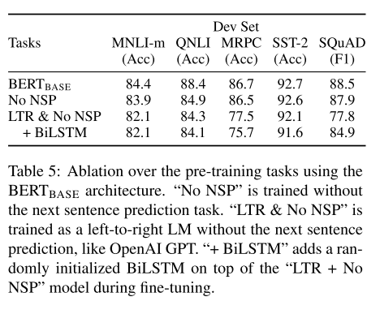
We recognize that it would also be possible to train separate LTR and RTL models and represent each token as the concatenation of the two models, as ELMo does. However:
this is twice as expensive as a single bidirectional model;
this is non-intuitive for tasks like QA, since the RTL model would not be able to condition the answer on the question;
this it is strictly less powerful than a deep bidirectional model, since it can use both left and right context at every layer.
可以训练单独的LTR和RTL模型，并像ELMo一样，将每个词表示为两个模型的拼接。然而:
( a )训练成本是一个双向模型的两倍； ( b )对于像QA这样的任务来说，这是不直观的，因为RTL模型无法对这个问题的答案进行限定； ( c )这严格来说不如深度双向模型强大，因为深度双向模型可以选择使用左语境或右语境。
1.9.8.2 Effect of Model Size
模型尺寸的影响
这部分设置的对照组的实验，模型的参数不同，总的来说模型的参数量级越大，模型效果越强。真的不是一般人能够玩得起的。
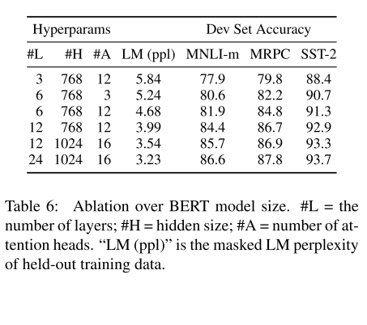
1.9.8.3 基本的特征对模型效果的影响
对比的是在命名实体识别中的任务
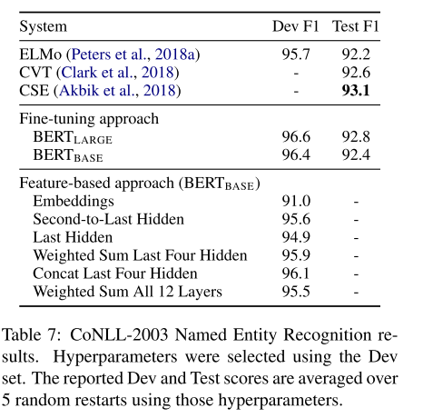
- bert中的posititon和transformer中的是不一样的？
前者是初始化一个矩阵自己训练参数，后者是正弦余弦函数计算控制距离的
- bert中的双向和elmo中的双向有什么不同？
emlo的本质是单向，单项训练完concat两个方向到一起，算是函数也是分开计算的，bert中的双向是真正的双向，双向的transformer，继承了transformer中的大部分结构但不是全部。
1.10 XLNET
bert 改进版，BERT的两个任务中一个是MLM,另一个是NSP，NSP给了实验的证明，但MLM无。
MLM只是随机进行mask的，而且只有15%中的80%是被随机mask的，重点就是这个随机，在根据这种完型填空的方式随意去预测一个词的时候，其实是无法确定这个词的位置的，预测这个词的时候因为是随机的，也就没有依赖这个词的上下文的关系。 XLNET解决了弃用了MLM。。。
据说效果在20来个任务上sota了。。。我2G了。。。
1.10.1 ABSTRACT
With the capability of modeling bidirectional contexts, denoising autoencoding based pretraining like BERT achieves better performance than pretraining approaches based on autoregressive language modeling. However, relying on corrupting the input with masks, BERT neglects dependency between the masked positions and suffers from a pretrain-finetune discrepancy. In light of these pros and cons, we propose XLNet, a generalized autoregressive pretraining method that (1) enables learning bidirectional contexts by maximizing the expected likelihood over all permutations of the factorization order and (2) overcomes the limitations of BERT thanks to its autoregressive formulation. Furthermore, XLNet integrates ideas from Transformer-XL, the state-of-the-art autoregressive model, into pretraining. Empirically, XLNet outperforms BERT on 20 tasks, often by a large margin, and achieves state-of-the-art results on 18 tasks including question answering, natural language inference, sentiment analysis, and document ranking.(Yang et al. 2019)
双向上下文进行建模的功能像基于BERT的基于自动编码的降噪方法比基于自回归语言建模的预训练方法具有更好的性能。但是，BERT依赖于使用mask输入，因此忽略了mask位置之间的依赖性，并且预训练使用MAAK而微调不使用mask异。鉴于这些优点和缺点，本文提出XLNet，这是一种广义的自回归预训练方法，该方法主要包括两部分的创新。
（1）通过最大化因式分解的所有排列的预期似然性来实现双向上下文学习。
（2）克服了BERT的局限性，因为它具有自回归功能公式。此外，XLNet将来自最先进的自回归模型Transformer-XL的思想整合到预训练中。从经验上讲，XLNet在20个任务上通常比BERT表现要好得多，并且在18个任务（包括问题回答，自然语言推论，情感分析和文档排名）上达到了最新的结果。
1.10.2 introduction
Unsupervised representation learning has been highly successful in the domain of natural language processing \([7], 19,[24,25,10] .\) Typically, these methods first pretrain neural networks on large-scale unlabeled text corpora, and then finetune the models or representations on downstream tasks. Under this shared high-level idea, different unsupervised pretraining objectives have been explored in literature. Among them, autoregressive (AR) language modeling and autoencoding (AE) have been the two most successful pretraining objectives.
在大规模的预料库上面进行训练分为两类：自回归AR模型和自编码AE模型。
AR language modeling seeks to estimate the probability distribution of a text corpus with an autoregressive model [7], 24,25\(] .\) Specifically, given a text sequence \(x=\left(x_{1}, \cdots, x_{T}\right),\) AR language modeling factorizes the likelihood into a forward product \(p(\mathbf{x})=\prod_{t=1}^{T} p\left(x_{t} \mid \mathbf{x}_{<t}\right)\) or a backward one \(p(\mathbf{x})=\prod_{t=T}^{1} p\left(x_{t} \mid \mathbf{x}_{>t}\right)\). A parametric model (e.g. a neural network) is trained to model each conditional distribution. Since an AR language model is only trained to encode a uni-directional context (either forward or backward), it is not effective at modeling deep bidirectional contexts. On the contrary, downstream language understanding tasks often require bidirectional context information. This results in a gap between AR language modeling and effective pretraining.
AR模型是计算语料的最大似然估计，也就是每次只能根据上文或者下文来预测当前词，无法同时依赖上下文的语义，例如：给定一段文本序列\(x=\left(x_{1}, \cdots, x_{T}\right),\)，AR模型前向/后向语言序列的最大似然估计\(p(\mathbf{x})=\prod_{t=1}^{T} p\left(x_{t} \mid \mathbf{x}_{<t}\right)\) or a backward one \(p(\mathbf{x})=\prod_{t=T}^{1} p\left(x_{t} \mid \mathbf{x}_{>t}\right)\)，由于AR语言模型仅经过训练才能对单向上下文（向前或向后）进行编码，因此在建模深层双向上下文时没有作用。 相反，下游语言理解任务通常需要双向上下文信息。 这导致AR语言建模与有效的预训练之间存在差距。
In comparison, AE based pretraining does not perform explicit density estimation but instead aims to reconstruct the original data from corrupted input. A notable example is BERT [10] , which has been the state-of-the-art pretraining approach. Given the input token sequence, a certain portion of tokens are replaced by a special symbol [MASK] , and the model is trained to recover the original tokens from the corrupted version. Since density estimation is not part of the objective, BERT is allowed to utilize bidirectional contexts for reconstruction. As an immediate benefit, this closes the aforementioned bidirectional information gap in AR language modeling, leading to improved performance. However, the artificial symbols like [MASK] used by BERT during pretraining are absent from real data at finetuning time, resulting in a pretrain-finetune discrepancy. Moreover, since the predicted tokens are masked in the input, BERT is not able to model the joint probability using the product rule as in AR language modeling. In other words, BERT assumes the predicted tokens are independent of each other given the unmasked tokens, which is oversimplified as high-order, long-range dependency is prevalent in natural language [9] .
相比之下，基于AE的预训练不会执行显式的密度估计(这个应该是指最大似然估计)，而是旨在从损坏的输入中重建原始数据。 一个著名的例子是BERT [10]，它是最先进的预训练方法。 给定输入token序列，将token的某些部分替换为特殊符号[MASK]，并且训练模型以从损坏的版本中恢复原始token。 由于密度估算不是目标的一部分，因此允许BERT利用双向上下文进行重建。 作为直接好处，这消除了AR语言建模中的上述双向信息障碍，从而提高了性能。 但是，在预训练期间，bert的预训练和微调之间是存在差异的。 此外，由于预测的token在输入中被屏蔽，因此BERT无法像AR语言建模那样使用乘积规则对联合概率进行建模。 换句话说，BERT假设给定了未屏蔽的token，预测的token彼此独立，这被简化为自然语言中普遍存在的高阶，长距离依赖性。
Faced with the pros and cons of existing language pretraining objectives, in this work, we propose XLNet, a generalized autoregressive method that leverages the best of both AR language modeling and \(\mathrm{AE}\) while avoiding their limitations.
本文中提出了XLNET模型，同时结合了AR和AE模型的优势，避免了AE模型的的限制。
- Firstly, instead of using a fixed forward or backward factorization order as in conventional AR models, XLNet maximizes the expected log likelihood of a sequence w.r.t. all possible permutations of the factorization order. Thanks to the permutation operation, the context for each position can consist of tokens from both left and right. In expectation, each position learns to utilize contextual information from all positions, i.e., capturing bidirectional context.
首先，XLNet 不使用传统AR模型中固定的前向或后向因式分解顺序，而是最大化所有可能因式分解顺序的期望对数似然。由于对因式分解顺序的排列操作，每个位置的语境都包含来自左侧和右侧的 token。因此，每个位置都能学习来自所有位置的语境信息，即捕捉双向语境。
- Secondly, as a generalized AR language model, XLNet does not rely on data corruption. Hence, XLNet does not suffer from the pretrain-finetune discrepancy that BERT is subject to. Meanwhile, the autoregressive objective also provides a natural way to use the product rule for factorizing the joint probability of the predicted tokens, eliminating the independence assumption made in BERT.
其次，作为一个泛化 AR 语言模型，XLNet 不依赖残缺数据。因此，XLNet 不会有 BERT 的预训练-微调差异。同时，自回归目标提供一种自然的方式，来利用乘法法则对预测 token 的联合概率执行因式分解（factorize），这消除了 BERT 的MLM任务中的独立性假设。
除了提出一个新的预训练目标，XLNet 还改进了预训练的架构设计。
In addition to a novel pretraining objective, XLNet improves architectural designs for pretraining.
提出了一种的新的预训练的目标函数。
Inspired by the latest advancements in AR language modeling, XLNet integrates the segment recurrence mechanism and relative encoding scheme of Transformer-XL [9] into pretraining, which empirically improves the performance especially for tasks involving a longer text sequence. Naively applying a Transformer(-XL) architecture to permutation-based language modeling does not work because the factorization order is arbitrary and the target is ambiguous. As a solution, we propose to reparameterize the Transformer \((-X L)\) network to remove the ambiguity.
受到 AR 语言建模领域最新进展的启发，XLNet 将 Transformer-XL 的分割循环机制（segment recurrence mechanism）和相对编码范式（relative encoding）整合到预训练中，实验表明，这种做法提高了性能，尤其是在那些包含较长文本序列的任务中。
简单地使用 Transformer(-XL) 架构进行基于排列的（permutation-based）语言建模是不成功的，因为因式分解顺序是任意的、训练目标是模糊的。因此，研究人员提出，对 Transformer(-XL) 网络的参数化方式进行修改，移除模糊性。
Empirically, XLNet achieves state-of-the-art results on 18 tasks, i.e., 7 GLUE language understanding tasks, 3 reading comprehension tasks including \(S Q u A D\) and \(R A C E, 7\) text classification tasks including Yelp and IMDB, and the ClueWeb09-B document ranking task. Under a set of fair comparison experiments, XLNet consistently outperforms BERT [10] on multiple benchmarks.
XLNET在18项任务中取得了sota。。。也屠榜了，bert也成序章了。
In this section, we first review and compare the conventional AR language modeling and BERT for language pretraining. Given a text sequence \(\mathbf{x}=\left[x_{1}, \cdots, x_{T}\right]\), AR language modeling performs pretraining by maximizing the likelihood under the forward autoregressive factorization:
AR模型的最大似然估计如下：
\[ \max _{\theta} \log p_{\theta}(\mathbf{x})=\sum_{t=1}^{T} \log p_{\theta}\left(x_{t} \mid \mathbf{x}_{<t}\right)=\sum_{t=1}^{T} \log \frac{\exp \left(h_{\theta}\left(\mathbf{x}_{1: t-1}\right)^{\top} e\left(x_{t}\right)\right)}{\sum_{x^{\prime}} \exp \left(h_{\theta}\left(\mathbf{x}_{1: t-1}\right)^{\top} e\left(x^{\prime}\right)\right)} \]
where \(h_{\theta}\left(\mathbf{x}_{1: t-1}\right)\) is a context representation produced by neural models, such as RNNs or Transformers, and \(e(x)\) denotes the embedding of \(x\). In comparison, BERT is based on denoising auto-encoding. Specifically, for a text sequence \(x\), BERT first constructs a corrupted version \(\hat{x}\) by randomly setting a portion (e.g. \(15 \%\) ) of tokens in \(x\) to a special symbol [MASK]. Let the masked tokens be \(\bar{x}\). The training objective is to reconstruct \(\overline{\mathbf{x}}\) from \(\hat{\mathbf{x}}\) :
而BERT是denoising auto-encoding的自编码的方法。对于序列\(x\)，BERT会随机挑选15%的Token变成[MASK]得到带噪声版本的\(hat{x}\)。假设被Mask的原始值为x¯，那么BERT希望尽量根据上下文恢复(猜测)出原始值了，也就是：
\[ \max _{\theta} \log p_{\theta}(\overline{\mathbf{x}} \mid \hat{\mathbf{x}}) \approx \sum_{t=1}^{T} m_{t} \log p_{\theta}\left(x_{t} \mid \hat{\mathbf{x}}\right)=\sum_{t=1}^{T} m_{t} \log \frac{\exp \left(H_{\theta}(\hat{\mathbf{x}})_{t}^{\top} e\left(x_{t}\right)\right)}{\sum_{x^{\prime}} \exp \left(H_{\theta}(\hat{\mathbf{x}})_{t}^{\top} e\left(x^{\prime}\right)\right)} \]
where \(m_{t}=1\) indicates \(x_{t}\) is masked, and \(H_{\theta}\) is a Transformer that maps a length- \(T\) text sequence \(\mathbf{x}\) into a sequence of hidden vectors \(H_{\theta}(\mathbf{x})=\left[H_{\theta}(\mathbf{x})_{1}, H_{\theta}(\mathbf{x})_{2}, \cdots, H_{\theta}(\mathbf{x})_{T}\right] .\) The pros and cons of the two pretraining objectives are compared in the following aspects: \(m_{t}=1\)表示\(x_{t}\)被mask，\(H_{\theta}\)表示序列x的隐藏层向量\(H_{\theta}(\mathbf{x})=\left[H_{\theta}(\mathbf{x})_{1}, H_{\theta}(\mathbf{x})_{2}, \cdots, H_{\theta}(\mathbf{x})_{T}\right] .\)
有如下两个假设
- Independence Assumption: As emphasized by the \(\approx\) sign in Eq. (2), BERT factorizes the joint conditional probability \(p(\overline{\mathbf{x}} \mid \hat{\mathbf{x}})\) based on an independence assumption that all masked tokens \(\overline{\mathbf{x}}\) are separately reconstructed. In comparison, the AR language modeling objective (1) factorizes \(p_{\theta}(\mathbf{x})\) using the product rule that holds universally without such an independence assumption.
独立性假设：主要是说bert中的mask部分是默认每个词之间是相互独立的。AR模型没有这种假设
- Input noise: The input to BERT contains artificial symbols like [MASK] that never occur in downstream tasks, which creates a pretrain-finetune discrepancy. Replacing [MASK] with original tokens as in [10] does not solve the problem because original tokens can be only used with a small probability - otherwise Eq. (2) will be trivial to optimize. In comparison, AR language modeling does not rely on any input corruption and does not suffer from this issue.
输入噪音：BERT的在预训练时会出现特殊的[MASK]，但是它在下游的fine-tuning中不会出现，这就是出现了不匹配。而语言模型不会有这个问题。
Context dependency: The AR representation \(h_{\theta}\left(\mathbf{x}_{1: t-1}\right)\) is only conditioned on the tokens up to position \(t\) (i.e. tokens to the left), while the BERT representation \(H_{\theta}(\mathbf{x})_{t}\) has access to the contextual information on both sides. As a result, the BERT objective allows the model to be pretrained to better capture bidirectional context.
AR模型只能学习到 上文或者下文，bert可以同时学习上下文。
XLnet的排序模型结构如图
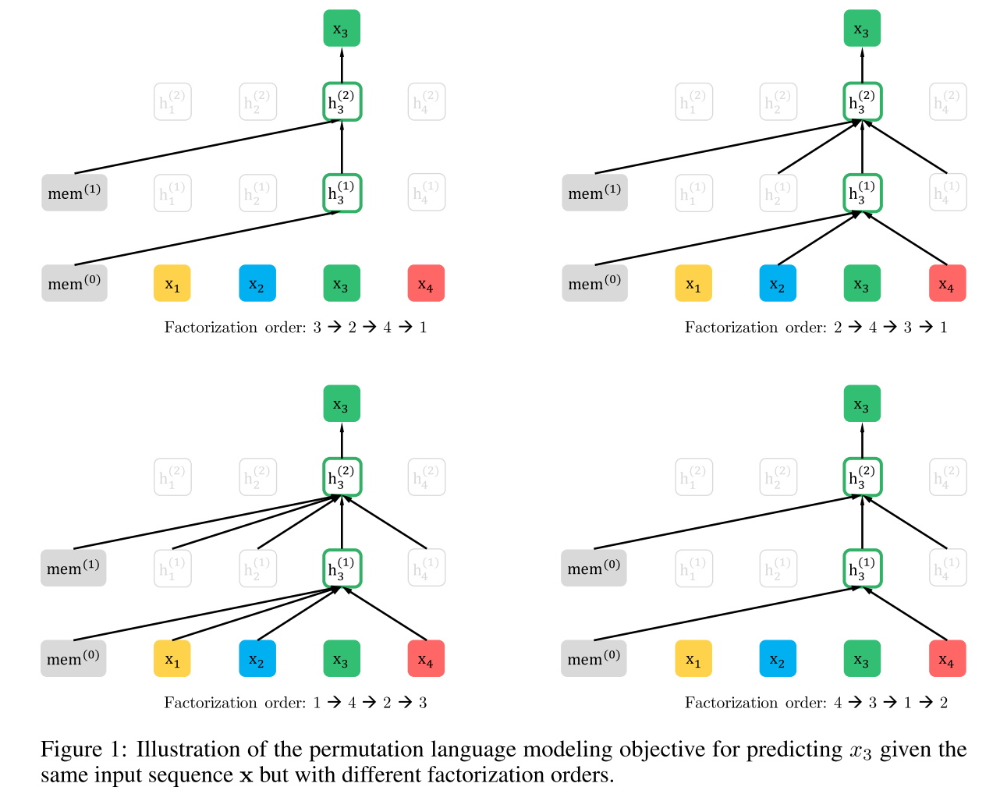
According to the comparison above, AR language modeling and BERT possess their unique advantages over the other. A natural question to ask is whether there exists a pretraining objective that brings the advantages of both while avoiding their weaknesses.
AR和bert各有优势，想找到一个能结合两者优势的方法。
Borrowing ideas from orderless NADE [32], we propose the permutation language modeling objective that not only retains the benefits of AR models but also allows models to capture bidirectional contexts. Specifically, for a sequence \(x\) of length \(T,\) there are \(T !\) different orders to perform a valid autoregressive factorization. Intuitively, if model parameters are shared across all factorization orders, in expectation, the model will learn to gather information from all positions on both sides.
从无序的NADE中得到的idea，提出了一种排序语言模型，既能保持AR模型的优点，又能同时捕捉双向的语义。
To formalize the idea, let \(\mathcal{Z}_{T}\) be the set of all possible permutations of the length- \(T\) index sequence \([1,2, \ldots, T] .\) We use \(z_{t}\) and \(\mathbf{z}_{<t}\) to denote the \(t\) -th element and the first \(t-1\) elements of a permutation \(\mathbf{z} \in \mathcal{Z}_{T}\). Then, our proposed permutation language modeling objective can be expressed as follows:
对于一个序列X,其长度为T，有\(T !\)中不同的因子分解方法，如果模型参数在所有的分解顺序中共享，，理论上说模型将学习从两边的所有位置收集信息。
排序语言模型的极大似然估计的目标函数如下:
\[ \max _{\theta} \mathbb{E}_{\mathbf{z} \sim \mathcal{Z}_{T}}\left[\sum_{t=1}^{T} \log p_{\theta}\left(x_{z_{t}} \mid \mathbf{x}_{\mathbf{z}<t}\right)\right] \]
Essentially, for a text sequence \(x\), we sample a factorization order \(z\) at a time and decompose the likelihood \(p_{\theta}(\mathbf{x})\) according to factorization order. Since the same model parameter \(\theta\) is shared across all factorization orders during training, in expectation, \(x_{t}\) has seen every possible element \(x_{i} \neq x_{t}\) in the sequence, hence being able to capture the bidirectional context. Moreover, as this objective fits into the AR framework, it naturally avoids the independence assumption and the pretrain-finetune discrepancy discussed in Section 2.1
对于一个序列X，对因子分解的排序z进行采样，然后根据因子在分解得到 \(p_{\theta}(\mathbf{x})\)，因为这个模型所有的参数在进行因子分解是是共享的，因此当\(x_{i} \neq x_{t}\) 是能够很好的捕捉上下文语义的，这样的目标函数比较适合AR模型，会减少预训练和微调之间的不一致的现象。
举个栗子：公式来自(“Xlnet详解” 2019)
\[ \begin{array}{l} p(\mathbf{x})=p\left(x_{1}\right) p\left(x_{2} \mid x_{1}\right) p\left(x_{3} \mid x_{1} x_{2}\right) \Rightarrow 1 \rightarrow 2 \rightarrow 3 \\ p(\mathbf{x})=p\left(x_{1}\right) p\left(x_{2} \mid x_{1} x_{3}\right) p\left(x_{3} \mid x_{1}\right) \Rightarrow 1 \rightarrow 3 \rightarrow 2 \\ p(\mathbf{x})=p\left(x_{1} \mid x_{2}\right) p\left(x_{2}\right) p\left(x_{3} \mid x_{1} x_{2}\right) \Rightarrow 2 \rightarrow 1 \rightarrow 3 \\ p(\mathbf{x})=p\left(x_{1} \mid x_{2} x_{3}\right) p\left(x_{2}\right) p\left(x_{3} \mid x_{2}\right) \Rightarrow 2 \rightarrow 3 \rightarrow 1 \\ p(\mathbf{x})=p\left(x_{1} \mid x_{3}\right) p\left(x_{2} \mid x_{1} x_{3}\right) p\left(x_{3}\right) \Rightarrow 3 \rightarrow 1 \rightarrow 2 \end{array} \]
Remark on Permutation The proposed objective only permutes the factorization order, not the sequence order. In other words, we keep the original sequence order, use the positional encodings corresponding to the original sequence, and rely on a proper attention mask in Transformers to achieve permutation of the factorization order. Note that this choice is necessary, since the model will only encounter text sequences with the natural order during finetuning.
所提出的目标只对分解顺序进行排列，而不是对序列顺序进行排列。换句话说，保持原始序列的顺序，使用与原始序列对应的位置编码，并依靠transformer中适当的注意掩码来实现因式分解顺序的排列。注意，这个选择是必要的，因为模型在微调过程中只会遇到具有自然顺序的文本序列。
To provide an overall picture, we show an example of predicting the token \(x_{3}\) given the same input sequence \(x\) but under different factorization orders in Figure 1
上面这一大类的叙述都是为了说明XLNET引入了PLM排序的方法，但是此时也注意到了，排序一时爽，一直排不一定爽，因为需要保留原来的为位置信息(这段话真的很上帝视角了)
1.10.3 Two-Stream Self-Attention
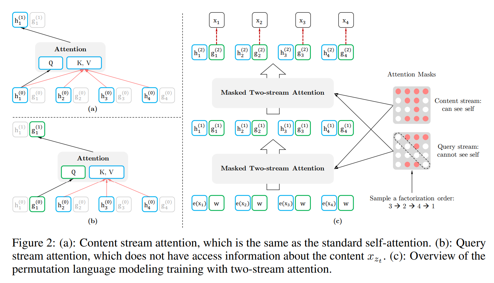
图2中的a图是content-attention和self-att是一致的，b是quary-att,和content-att是不同的，c是plm模型的两个双流机制的作用
While the permutation language modeling objective has desired properties, naive implementation with standard Transformer parameterization may not work. To see the problem, assume we parameterize the next-token distribution \(p_{\theta}\left(X_{z_{t}} \mid \mathbf{x}_{\mathbf{z}_{<t}}\right)\) using the standard Softmax formulation, i.e., \(p_{\theta}\left(X_{z_{t}}=\right.\) \(\left.x \mid \mathbf{x}_{\mathbf{z}_{<t}}\right)=\frac{\exp \left(e(x)^{\top} h_{\theta}\left(\mathbf{x}_{\mathbf{z}<t}\right)\right)}{\sum_{x^{\prime}} \exp \left(e\left(x^{\prime}\right)^{\top} h_{\theta}\left(\mathbf{x}_{\mathbf{z}<t}\right)\right)},\) where \(h_{\theta}\left(\mathbf{x}_{\mathbf{z}_{<t}}\right)\) denotes the hidden representation of \(\mathbf{x}_{\mathbf{z}_{<t}}\) produced by the shared Transformer network after proper masking. Now notice that the representation \(h_{\theta}\left(\mathbf{x}_{\mathbf{z}_{<t}}\right)\) does not depend on which position it will predict, i.e., the value of \(z_{t} .\) Consequently, the same distribution is predicted regardless of the target position, which is not able to learn useful representations (see Appendix A.1 for a concrete example). To avoid this problem, we propose to re-parameterize the next-token distribution to be target position aware:
在plm算法中，self-att可能不起作用吗，假设学习下一个token的的分布\(p_{\theta}\left(X_{z_{t}} \mid \mathbf{x}_{\mathbf{z}_{<t}}\right)\) 是使用softmax的标准化的公式 \(p_{\theta}\left(X_{z_{t}}=\right.\) \(\left.x \mid \mathbf{x}_{\mathbf{z}_{<t}}\right)=\frac{\exp \left(e(x)^{\top} h_{\theta}\left(\mathbf{x}_{\mathbf{z}<t}\right)\right)}{\sum_{x^{\prime}} \exp \left(e\left(x^{\prime}\right)^{\top} h_{\theta}\left(\mathbf{x}_{\mathbf{z}<t}\right)\right)},\)
其中\(h_{\theta}\left(\mathbf{x}_{\mathbf{z}_{<t}}\right)\) 表示 \(\mathbf{x}_{\mathbf{z}_{<t}}\)经过mask的transformer的操作的隐藏层的信息，transformer中的哪个mask？感觉是后者
\[ p_{\theta}\left(X_{z_{t}}=x \mid \mathbf{x}_{z_{<t}}\right)=\frac{\exp \left(e(x)^{\top} g_{\theta}\left(\mathbf{x}_{\mathbf{z}_{<t}}, z_{t}\right)\right)}{\sum_{x^{\prime}} \exp \left(e\left(x^{\prime}\right)^{\top} g_{\theta}\left(\mathbf{x}_{\mathbf{z}_{<} t}, z_{t}\right)\right)} \]
其中 \(g_{\theta}\left(x_{z<t}, \quad z_{t}\right)\) 是新的表示形式, 并且把位置信息 \(z_{t}\) 作为了其输入。
Two-Stream Self-Attention While the idea of target-aware representations removes the ambiguity in target prediction, how to formulate \(g_{\theta}\left(\mathbf{x}_{\mathbf{z}_{<t}}, z_{t}\right)\) remains a non-trivial problem. Among other possibilities, we propose to “stand” at the target position \(z_{t}\) and rely on the position \(z_{t}\) to gather information from the context \(\mathbf{x}_{\mathbf{z}<t}\) through attention. For this parameterization to work, there are two requirements that are contradictory in a standard Transformer architecture:
双流注意力机制减少了预测过程中的模糊性？
- to predict the token \(x_{z_{t}}, g_{\theta}\left(\mathbf{x}_{\mathbf{z}_{<t}}, z_{t}\right)\) should only use the position \(z_{t}\) and not the content \(x_{z_{t}},\) otherwise the objective becomes trivial;
如果目标是预测 \(x_{z_{t}}, \quad g_{\theta}\left(x_{z<t}, \quad z_{t}\right)\) 那么只能有其位置信息 \(z_{t}\) 而不能包含内容信息 \(x_{z_{t}}\)
- to predict the other tokens \(x_{z_{j}}\) with \(j>t, g_{\theta}\left(\mathbf{x}_{\mathbf{z}_{<t}}, z_{t}\right)\) should also encode the content \(x_{z_{t}}\) to provide full contextual information.
如果目标是预测其他tokens即 \(x_{z_{j}}, \quad j>t,\) 那么应该包含 \(x_{z_{t}}\) 的内容信息这样才有完整的上下文信息。
这个地方我理解了很久：做完plm排序之后是没有位置信息的，因此为了增加为了位置信息需要增加位置矩阵，但是待预测的信息又不能看到其token的具体内容，因此把attenton分开分成下文的双流att
To resolve such a contradiction, we propose to use two sets of hidden representations instead of one:
- The content representation \(h_{\theta}\left(\mathbf{x}_{\mathbf{z}<t}\right),\) or abbreviated as \(h_{z_{t}},\) which serves a similar role to the standard hidden states in Transformer. This representation encodes both the context and \(x_{z_{t}}\) itself.
\(h_{z_{t}}\)的内容表示和transformer中的self-att一样，这个是学习上下文语义的。
- The query representation \(g_{\theta}\left(\mathbf{x}_{\mathbf{z}_{<t}}, z_{t}\right),\) or abbreviated as \(g_{z_{t}},\) which only has access to the contextual information \(\mathrm{x}_{\mathbf{z}_{<t}}\) and the position \(z_{t},\) but not the content \(x_{z_{t}},\) as discussed above.
\(g_{z_{t}},\)只只是单纯的用来学习位置关系的，不包含语义信息。
Computationally, the first layer query stream is initialized with a trainable vector, i.e. \(g_{i}^{(0)}=w\), while the content stream is set to the corresponding word embedding, i.e. \(h_{i}^{(0)}=e\left(x_{i}\right)\). For each self-attention layer \(m=1, \ldots, M,\) the two streams of representations are schematically \(^{2}\) updated with a shared set of parameters as follows (illustrated in Figures \(2(\mathrm{a})\) and \((\mathrm{b}))\) : \(g_{z_{t}}^{(m)} \leftarrow\) Attention \(\left(\mathrm{Q}=g_{z_{t}}^{(m-1)}, \mathrm{KV}=\mathbf{h}_{\mathrm{z}<t}^{(m-1)} ; \theta\right), \quad\left(\right.\) query stream: use \(z_{t}\) but cannot see \(\left.x_{z_{t}}\right)\)
首先, 第一层的查询流是随机初始化了一个向量即 \(g_{i}^{(0)}=w,\) 内容流是采用的词向量即 \(h_{i}^{(0)}=e\left(x_{i}\right)\), self-attention的计算过程中两个流的网络权重是共享的，最后在微调阶段，只需要简单的把query stream移除, 只采用content stream即 可。
图2中的右边部分，提到了了attention mask,这个怎么理解?感觉文中并没有仔细的回答,这里引用下知乎张俊林老师的回答(“Xlnet与bert的异同” 2019)
上面说的Attention掩码，我估计你还是没了解它的意思，我再用例子解释一下。Attention Mask的机制，核心就是说，尽管当前输入看上去仍然是x1->x2->x3->x4，但是我们已经改成随机排列组合的另外一个顺序x3->x2->x4->x1了，如果用这个例子用来从左到右训练LM，意味着当预测x2的时候，它只能看到上文x3；当预测x4的时候，只能看到上文x3和x2，以此类推……这样，比如对于x2来说，就看到了下文x3了。这种在输入侧维持表面的X句子单词顺序，但是其实在Transformer内部，看到的已经是被重新排列组合后的顺序，是通过Attention掩码来实现的。如上图所示，输入看上去仍然是x1,x2,x3,x4，可以通过不同的掩码矩阵，让当前单词Xi只能看到被排列组合后的顺序x3->x2->x4->x1中自己前面的单词。这样就在内部改成了被预测单词同时看到上下文单词，但是输入侧看上去仍然维持原先的单词顺序了。关键要看明白上图右侧那个掩码矩阵，我相信很多人刚开始没看明白，因为我刚开始也没看明白，因为没有标出掩码矩阵的单词坐标，它的坐标是1-2-3-4，就是表面那个X的单词顺序，通过掩码矩阵，就能改成你想要的排列组合，并让当前单词看到它该看到的所谓上文，其实是掺杂了上文和下文的内容。这是attention mask来实现排列组合的背后的意思。
尽管看上去，XLNet在预训练机制引入的Permutation Language Model这种新的预训练目标，和Bert采用Mask标记这种方式，有很大不同。其实你深入思考一下，会发现，两者本质是类似的。区别主要在于：Bert是直接在输入端显示地通过引入Mask标记，在输入侧隐藏掉一部分单词，让这些单词在预测的时候不发挥作用，要求利用上下文中其它单词去预测某个被Mask掉的单词；而XLNet则抛弃掉输入侧的Mask标记，通过Attention Mask机制，在Transformer内部随机Mask掉一部分单词（这个被Mask掉的单词比例跟当前单词在句子中的位置有关系，位置越靠前，被Mask掉的比例越高，位置越靠后，被Mask掉的比例越低），让这些被Mask掉的单词在预测某个单词的时候不发生作用。所以，本质上两者并没什么太大的不同，只是Mask的位置，Bert更表面化一些，XLNet则把这个过程隐藏在了Transformer内部而已。这样，就可以抛掉表面的[Mask]标记，解决它所说的预训练里带有[Mask]标记导致的和Fine-tuning过程不一致的问题。至于说XLNet说的，Bert里面被Mask掉单词的相互独立问题，也就是说，在预测某个被Mask单词的时候，其它被Mask单词不起作用，这个问题，你深入思考一下，其实是不重要的，因为XLNet在内部Attention Mask的时候，也会Mask掉一定比例的上下文单词，只要有一部分被Mask掉的单词，其实就面临这个问题。而如果训练数据足够大，其实不靠当前这个例子，靠其它例子，也能弥补被Mask单词直接的相互关系问题，因为总有其它例子能够学会这些单词的相互依赖关系。
我相信，通过改造Bert的预训练过程，其实是可以模拟XLNet的Permutation Language Model过程的：Bert目前的做法是，给定输入句子X，随机Mask掉15%的单词，然后要求利用剩下的85%的单词去预测任意一个被Mask掉的单词，被Mask掉的单词在这个过程中相互之间没有发挥作用。如果我们把Bert的预训练过程改造成：对于输入句子，随机选择其中任意一个单词Ti，只把这个单词改成Mask标记，假设Ti在句子中是第i个单词，那么此时随机选择X中的任意i个单词，只用这i个单词去预测被Mask掉的单词。当然，这个过程理论上也可以在Transformer内采用attention mask来实现。如果是这样，其实Bert的预训练模式就和XLNet是基本等价的了。
或者换个角度思考，假设仍然利用Bert目前的Mask机制，但是把Mask掉15%这个条件极端化，改成，每次一个句子只Mask掉一个单词，利用剩下的单词来预测被Mask掉的单词。那么，这个过程其实跟XLNet的PLM也是比较相像的，区别主要在于每次预测被Mask掉的单词的时候，利用的上下文更多一些（XLNet在实现的时候，为了提升效率，其实也是选择每个句子最后末尾的1/K单词被预测，假设K=7，意味着一个句子X，只有末尾的1/7的单词会被预测，这意味着什么呢？意味着至少保留了6/7的Context单词去预测某个单词，对于最末尾的单词，意味着保留了所有的句子中X的其它单词，这其实和上面提到的Bert只保留一个被Mask单词是一样的）。或者我们站在Bert预训练的角度来考虑XLNet，如果XLNet改成对于句子X，只需要预测句子中最后一个单词，而不是最后的1/K（就是假设K特别大的情况），那么其实和Bert每个输入句子只Mask掉一个单词，两者基本是等价的。 当然，XLNet这种改造，维持了表面看上去的自回归语言模型的从左向右的模式，这个Bert做不到，这个有明显的好处，就是对于生成类的任务，能够在维持表面从左向右的生成过程前提下，模型里隐含了上下文的信息。所以看上去，XLNet貌似应该对于生成类型的NLP任务，会比Bert有明显优势。另外，因为XLNet还引入了Transformer XL的机制，所以对于长文档输入类型的NLP任务，也会比Bert有明显优势。
好长~，简单的来说就是Bert中的mask的15%是在input中mask的，xlnet中的plm并不是真正的先排序再随机抽样一些进行训练，而是使用了在attention中同样使用了mask
\[ h_{z_{t}}^{(m)} \leftarrow \text { Attention }\left(\mathrm{Q}=h_{z_{t}}^{(m-1)}, \mathrm{KV}=\mathbf{h}_{\mathrm{z}<t}^{(m-1)} ; \theta\right), \quad\left(\text { content stream: use both } z_{t} \text { and } x_{z_{t}}\right) \]
where \(\mathrm{Q}, \mathrm{K}, \mathrm{V}\) denote the query, key, and value in an attention operation \([33] .\) The update rule of the content representations is exactly the same as the standard self-attention, so during finetuning, we can simply drop the query stream and use the content stream as a normal Transformer \((-X L)\). Finally, we can use the last-layer query representation \(g_{z_{t}}^{(M)}\) to compute Eq. (4).
1.10.4 局部预测
Partial Prediction While the permutation language modeling objective (3) has several benefits, it is a much more challenging optimization problem due to the permutation and causes slow convergence in preliminary experiments. To reduce the optimization difficulty, we choose to only predict the last tokens in a factorization order. Formally, we split \(\mathbf{z}\) into a non-target subsequence \(\mathbf{z}_{\leq c}\) and a target subsequence \(\mathbf{z}_{>}, c,\) where \(c\) is the cutting point. The objective is to maximize the log-likelihood of the target subsequence conditioned on the non-target subsequence, i.e.,
这个地方是说使用plm效果虽好，但是因为使用到了排序模型，就会非常的耗时，因此在在因子分解的排序中只会预测最后几个token也就是不全部预测，只选择部分作为target.具体地，就是取一个位置 \(c,\) 满足 \(c<t, \quad \boldsymbol{z}_{\leq c}\) 不作为target, \(\boldsymbol{z}_{>c}\) 作为target进行训练。
\[ \max _{\theta} \mathbb{E}_{\mathbf{z} \sim \mathcal{Z}_{T}}\left[\log p_{\theta}\left(\mathbf{x}_{\mathbf{z}_{>} c} \mid \mathbf{x}_{\mathbf{z} \leq c}\right)\right]=\mathbb{E}_{\mathbf{z} \sim \mathcal{Z}_{T}}\left[\sum_{t=c+1}^{|\mathbf{z}|} \log p_{\theta}\left(x_{z_{t}} \mid \mathbf{x}_{\mathbf{z}_{<t}}\right)\right] \] Note that \(\mathbf{z}_{>} c\) is chosen as the target because it possesses the longest context in the sequence given the current factorization order \(\mathbf{z}\). A hyperparameter \(K\) is used such that about \(1 / K\) tokens are selected for predictions; i.e., \(|\mathbf{z}| /(|\mathbf{z}|-c) \approx K\). For unselected tokens, their query representations need not be computed, which saves speed and memory.
引入一个参数K，来计算C的取值。bert中的mask是随机15%，k的取值一般是？
1.10.5 Incorporating Ideas from Transformer-X
- 看下原文
We integrate two important techniques in Transformer-XL, namely the relative positional encoding scheme and the segment recurrence mechanism. We apply relative positional encodings based on the original sequence as discussed earlier, which is straightforward. Now we discuss how to integrate the recurrence mechanism into the proposed permutation setting and enable the model to reuse hidden states from previous segments. Without loss of generality, suppose we have two segments taken from a long sequence \(\mathbf{s} ;\) i.e., \(\tilde{\mathbf{x}}=\mathbf{s}_{1: T}\) and \(\mathbf{x}=\mathbf{s}_{T+1: 2 T}\). Let \(\mathbf{z}\) and \(\mathbf{z}\) be permutations of \([1 \cdots T]\) and \([T+1 \cdots 2 T]\) respectively. Then, based on the permutation \(\tilde{\mathbf{z}},\) we process the first segment, and then cache the obtained content representations \(\tilde{\mathbf{h}}^{(m)}\) for each layer \(m .\) Then, for the next segment \(\mathbf{x}\), the attention update with memory can be written as
\[ h_{z_{t}}^{(m)} \leftarrow \text { Attention }\left(\mathrm{Q}=h_{z_{t}}^{(m-1)}, \mathrm{KV}=\left[\tilde{\mathbf{h}}^{(m-1)}, \mathbf{h}_{\mathbf{z} \leq t}^{(m-1)}\right] ; \theta\right) \]
where \([., .]\) denotes concatenation along the sequence dimension. Notice that positional encodings only depend on the actual positions in the original sequence. Thus, the above attention update is independent of \(\tilde{\mathbf{z}}\) once the representations \(\tilde{\mathbf{h}}^{(m)}\) are obtained. This allows caching and reusing the memory without knowing the factorization order of the previous segment. In expectation, the model learns to utilize the memory over all factorization orders of the last segment. The query stream can be computed in the same way. Finally, Figure 2 (c) presents an overview of the proposed permutation language modeling with two-stream attention (see Appendix A.4 for more detailed illustration).
结合了transformer-XL中的方法，应该是introduction中提到的分割循环机制（segment recurrence mechanism）和相对编码范式（relative encoding）整合到预训练中，简单来说是为了解决文本过长的问题。这个等看了xl再补充
1.10.6 Modeling Multiple Segments
Many downstream tasks have multiple input segments, e.g., a question and a context paragraph in question answering. We now discuss how we pretrain XLNet to model multiple segments in the autoregressive framework. During the pretraining phase, following BERT, we randomly sample two segments (either from the same context or not) and treat the concatenation of two segments as one sequence to perform permutation language modeling. We only reuse the memory that belongs to the same context. Specifically, the input to our model is similar to BERT: [A, SEP, B, SEP, CLS], where “SEP” and “CLL” are two special symbols and “A” and “B” are the two segments. Although we follow the two-segment data format, XLNet-Large does not use the objective of next sentence prediction [10] as it does not show consistent improvement in our ablation study (see Section 3.7).
许多下游任务有多个输入部分，例如，一个问题和一个回答问题的上下文段落。现在讨论如何预先训练XLNet在自回归框架中对多个片段进行建模。在BERT之后的预训练阶段，随机抽取两个片段(无论是否来自同一上下文)，并将两个片段的连接作为一个序列来执行排列语言建模。只重用属于同一上下文的内存。具体来说，我们模型的输入类似于BERT: [A, SEP, B, SEP, CLS]，其中“SEP”和“CLL”是两个特殊符号，“A”和“B”是两个片段。XLNET中无NSP任务,这也是和bert中不同的一点
Relative Segment Encodings Architecturally, different from BERT that adds an absolute segment embedding to the word embedding at each position, we extend the idea of relative encodings from Transformer-XL to also encode the segments.
bert中使用的是绝对位置的9编码，XLNET中使用的是TRM-XL中的相对位置编码，下面这段是在解释相对位置编码的定义。
Given a pair of positions \(i\) and \(j\) in the sequence, if \(i\) and \(j\) are from the same segment, we use a segment encoding \(\mathbf{s}_{i j}=\mathbf{s}_{+}\) or otherwise \(\mathbf{s}_{i j}=\mathbf{s}_{-},\) where \(\mathbf{s}_{+}\) and \(\mathbf{s}_{-}\) are learnable model parameters for each attention head. In other words, we only consider whether the two positions are within the same segment, as opposed to considering which specific segments they are from. This is consistent with the core idea of relative encodings; i.e., only modeling the relationships between positions. When \(i\) attends to \(j,\) the segment encoding \(\mathbf{s}_{i j}\) is used to compute an attention weight \(a_{i j}=\left(\mathbf{q}_{i}+\mathbf{b}\right)^{\top} \mathbf{s}_{i j},\) where \(\mathbf{q}_{i}\) is the query vector as in a standard attention operation and \(\mathbf{b}\) is a learnable head-specific bias vector. Finally, the value \(a_{i j}\) is added to the normal attention weight. There are two benefits of using relative segment encodings. First, the inductive bias of relative encodings improves generalization [9]. Second, it opens the possibility of finetuning on tasks that have more than two input segments, which is not possible using absolute segment encodings.
这篇paper后面的部分主要是解释xlnet与bert等pre-train的异同，其实前面已经介绍了。不做说明。实验略。
参考文献
Radford, Alec, Karthik Narasimhan, Tim Salimans, and Ilya Sutskever. 2018. “Improving Language Understanding by Generative Pre-Training.”
“TRANSFORMER详解.” 2021. 2021. https://www.bilibili.com/video/BV1Di4y1c7Zm?p=7.
Vaswani, Ashish, Noam Shazeer, Niki Parmar, Jakob Uszkoreit, Llion Jones, Aidan N Gomez, Lukasz Kaiser, and Illia Polosukhin. 2017. “Attention Is All You Need.” arXiv.
“Xlnet与bert的异同.” 2019. 2019. https://zhuanlan.zhihu.com/p/70257427.
“Xlnet详解.” 2019. 2019. https://blog.csdn.net/weixin_37947156/article/details/93035607.
Yang, Zhilin, Zihang Dai, Yiming Yang, Jaime Carbonell, Ruslan Salakhutdinov, and Quoc V. Le. 2019. “XLNet: Generalized Autoregressive Pretraining for Language Understanding.” http://arxiv.org/abs/1906.08237.